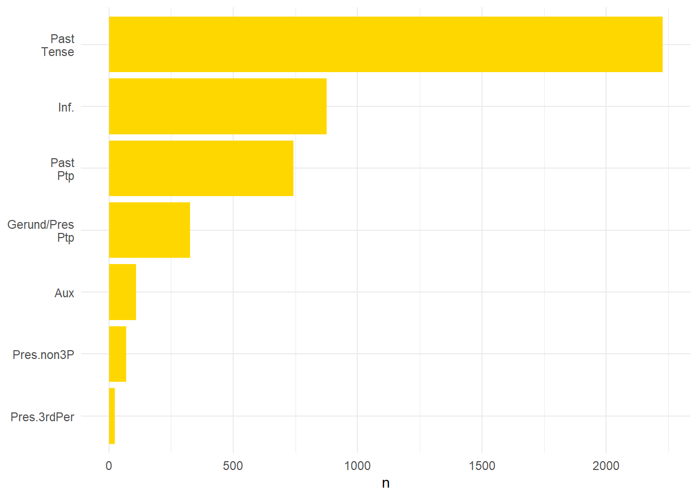
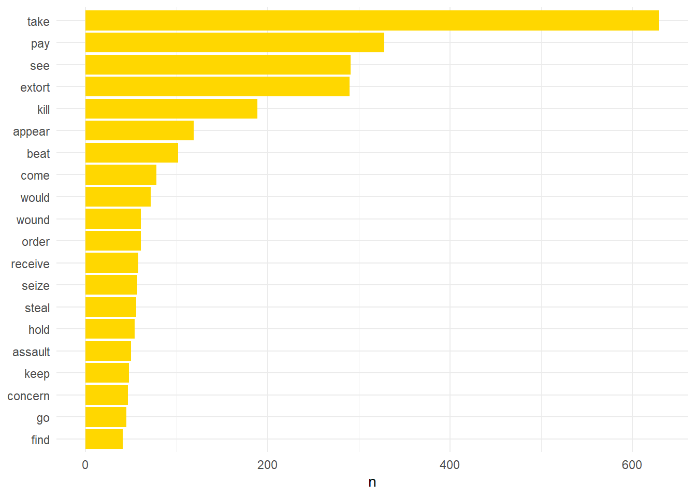

What data structure does spacyr take? TIF. What does Spacy do? Parse, Tokenise, tag.
#Create the TIF (Text Interchange Format) data structure which spacy needs as an input
txt <- data.frame(doc_id = lincsEvents$UUID, text = lincsEvents$word)
#Check if the format is correct
tif_is_corpus_df(txt)## [1] TRUE#Parse the text through Spacy
parsedTxt <- spacy_parse(txt)
slice(parsedTxt, 500:510)## doc_id sentence_id token_id token lemma
## 1 51fcb885-19c1-408e-b77c-6c7f73464c53 1 43 . .
## 2 51fcb885-19c1-408e-b77c-6c7f73464c53 2 1 Dated date
## 3 51fcb885-19c1-408e-b77c-6c7f73464c53 2 2 at at
## 4 51fcb885-19c1-408e-b77c-6c7f73464c53 2 3 the the
## 5 51fcb885-19c1-408e-b77c-6c7f73464c53 2 4 Tower Tower
## 6 51fcb885-19c1-408e-b77c-6c7f73464c53 2 5 of of
## 7 51fcb885-19c1-408e-b77c-6c7f73464c53 2 6 London London
## 8 51fcb885-19c1-408e-b77c-6c7f73464c53 2 7 , ,
## 9 51fcb885-19c1-408e-b77c-6c7f73464c53 2 8 13 13
## 10 51fcb885-19c1-408e-b77c-6c7f73464c53 2 9 Jan. January
## 11 51fcb885-19c1-408e-b77c-6c7f73464c53 2 10 1341 1341
## pos entity
## 1 PUNCT
## 2 VERB
## 3 ADP
## 4 DET FAC_B
## 5 PROPN FAC_I
## 6 ADP FAC_I
## 7 PROPN FAC_I
## 8 PUNCT
## 9 NUM DATE_B
## 10 PROPN DATE_I
## 11 NUM DATE_IParse the text and include detailed part of speech tag. Not sure if this makes much difference but I will try it and see.
detailTag <- spacy_parse(txt, tag = TRUE)
verbDetails <- detailTag %>% filter(pos == 'VERB')Now I need to join this to the ID from the original volume so I can cross-check the references and work out what analysis I can carry out with it.
lincsIDS <- lincsEvents %>% select(lincsID, UUID, word)
verbDetails <- verbDetails %>% rename(UUID = doc_id)
verbDetails <- verbDetails %>% inner_join(lincsIDS)## Joining, by = "UUID"Now I have all the verbs from the document and their tense, mood, and number assigned to the ID from the original volume which is easier to read the the UUID. Now I will do some counts to see the most prevalent types of verb and then another to see the most common verbs.
library('scales')##
## Attaching package: 'scales'## The following object is masked from 'package:purrr':
##
## discard## The following object is masked from 'package:readr':
##
## col_factorverbDetails <- verbDetails %>%
mutate(tag = case_when(tag == "VBD" ~ "Past Tense", tag == "VB" ~ "Inf.", tag == "VBN" ~ "Past Ptp", tag == "VBG" ~ "Gerund/Pres Ptp", tag == "MD" ~ "Aux", tag == "VBP" ~ "Pres.non3P", tag == "VBZ" ~ "Pres.3rdPer"))
verbDetails %>% count(tag, sort = TRUE) %>% mutate(tag = reorder(tag,n)) %>% ggplot(aes(tag, n)) + geom_col(fill="#ffd700") + scale_x_discrete(labels = label_wrap(4)) + xlab(NULL) + coord_flip() + theme_minimal()
Now I will count the most common verbs.
verbDetails %>% count(lemma, sort = TRUE) %>% filter(n > 40) %>% mutate(lemma = reorder(lemma,n)) %>% ggplot(aes(lemma, n)) + geom_col(fill="#ffd700") + xlab(NULL) + coord_flip() + theme_minimal()
There are a few interesting verbs here. A couple require some further exploration. To look at the text alongside the verbs I will append the two together for easy reference. I want to specifically look at the word ‘see’. This occupies such a high position as it is used by the original editor Bernard McLane to draw links between allegations. For example McLane would refer to other similar crimes by the same perpetrator. If that was always the case then it might be possible to automate these linkages.
links <- verbDetails %>% filter(lemma == 'see')
links## UUID sentence_id token_id token lemma pos
## 1 ce2e7d3b-044c-45b7-b837-58ce7bbd9537 3 2 See see VERB
## 2 f0735158-866b-43eb-b83a-5684c81acae8 2 2 See see VERB
## 3 f1ae65fc-8425-490e-8409-ba1632d5773b 2 6 see see VERB
## 4 8d02cd6f-cd41-43e1-910c-9479e0ec927b 2 12 see see VERB
## 5 85ed3af4-3f81-4f9e-830a-1e268bd21dab 2 2 See see VERB
## 6 a627d0ae-5c56-40fb-bacc-d42e91e3fcf4 2 2 See see VERB
## 7 6f790061-af43-42f4-8ca9-4a9462b5f9d2 2 2 See see VERB
## 8 d662da6f-3c2b-40b8-996f-2847627eed21 2 2 See see VERB
## 9 741329bc-5456-45f0-9704-249fbfc06c53 2 2 See see VERB
## 10 95e5c8e8-5ad0-4c8f-89ba-455e3427c0d3 4 6 see see VERB
## 11 64998da5-13be-443c-abbb-12d8a5ff0731 2 2 See see VERB
## 12 7074398f-570f-42e0-8a26-eb9723485852 3 8 see see VERB
## 13 6f3eb4a5-fdb4-400f-8056-352c3915390e 2 2 See see VERB
## 14 756b033c-0fcd-4a14-b546-089b0cfad808 2 2 See see VERB
## 15 65e48f15-2ea0-4e8f-857a-989bbb26b26c 2 2 See see VERB
## 16 e34e8fc5-24e7-44f4-855f-e2b959972cfe 2 2 See see VERB
## 17 87320578-d508-4c30-8c63-5d7558509420 2 2 See see VERB
## 18 8c54c996-3434-4424-84cb-63cea66937b3 2 2 See see VERB
## 19 055dac4a-2110-4109-81ed-1d49a07c0b11 2 2 See see VERB
## 20 71674720-dfec-4066-84de-a588ae22908c 2 2 See see VERB
## 21 7c2d0d5c-387e-4110-bee1-5c6675e8ec53 2 2 See see VERB
## 22 b96017ea-c9d7-4d85-9d60-5b2117961aaa 2 2 See see VERB
## 23 5a18519e-d394-405f-9bf5-8e309a8b67d8 2 2 See see VERB
## 24 a9123464-1ee6-4ff5-839d-85986a06786d 2 2 See see VERB
## 25 1299b310-c845-4cf3-b112-caf95bcafeda 2 2 See see VERB
## 26 e776582e-9389-4b14-96cb-c790e336d128 2 2 See see VERB
## 27 fe756a77-4f23-4131-93e0-f04f478aed85 2 2 See see VERB
## 28 1f9caa62-de9d-42f0-8f89-f1264c12ad23 2 2 See see VERB
## 29 42b3dcd2-c6db-48e9-a605-ce6ff3ab24f0 2 2 See see VERB
## 30 c8c4d87d-ebb9-4edb-aa8e-eee761c4fe7b 2 2 See see VERB
## 31 75e2d223-a6f6-4aa9-990a-88ee484a279b 3 2 See see VERB
## 32 aed3a8d5-44bd-4bc5-9d3a-499168ace258 2 6 see see VERB
## 33 7d033305-d67c-4f78-b079-1849fddc193e 2 6 see see VERB
## 34 a8752c9c-7620-44dd-ae29-d6660a4fe9a0 2 2 See see VERB
## 35 e51ae062-c83c-4873-979e-2c027c8d63ed 2 2 See see VERB
## 36 4d2ed633-d893-40cd-b780-734b66325237 2 2 See see VERB
## 37 4d2ed633-d893-40cd-b780-734b66325237 3 8 see see VERB
## 38 d47765c6-a5ff-49b3-8006-65571e402911 2 2 See see VERB
## 39 d8c1287a-727a-4d8d-bf0e-edfdd884db16 2 2 See see VERB
## 40 c29b54c0-7478-42d1-a507-e3248e565cb8 3 2 See see VERB
## 41 42f4b42c-6ad7-4372-859b-ce00766c28c2 2 2 See see VERB
## 42 3177e391-71ea-437b-9ead-2a4f44167441 2 2 See see VERB
## 43 a9ec0e15-165a-4043-840f-ce23d9ca573b 2 22 see see VERB
## 44 b4c96035-bd24-4279-be1e-55a82fcd8e28 3 2 See see VERB
## 45 845cd88c-f5f8-4e74-893d-fbe8325d041d 2 2 See see VERB
## 46 cbb7d16b-7ac9-42d2-8902-6cbd67898c02 2 2 See see VERB
## 47 70581fbd-2feb-4aa2-84b7-41194dfa3894 2 2 See see VERB
## 48 579d0fd6-5816-4801-a469-53e6c06a2c1e 2 2 See see VERB
## 49 6ad5befe-bf38-4693-a572-2f728a19df8d 2 2 See see VERB
## 50 2979ab3e-fdd5-4cde-b4c7-c423fe027548 2 2 See see VERB
## 51 1e1faf56-8dd7-47da-b7db-9802eff22372 2 2 See see VERB
## 52 8d9b24b9-19bf-492a-b00a-7606839163e8 2 2 See see VERB
## 53 8d9b24b9-19bf-492a-b00a-7606839163e8 3 8 see see VERB
## 54 ac39b768-c12f-497f-b36c-c0fee4244705 2 2 See see VERB
## 55 81b26807-6ed4-41a8-8d4f-ee5733f4c55b 2 6 see see VERB
## 56 6713ef3a-5ed8-4f62-8978-63389beb6992 2 6 see see VERB
## 57 2248f544-b313-4b76-b91c-c118e0443515 2 2 See see VERB
## 58 eb637565-1d14-45ba-93e0-269010762df1 2 2 See see VERB
## 59 49782cba-4190-4a04-9007-933a75f319de 2 2 See see VERB
## 60 71258dc6-051e-4ce4-bae0-4ac785f7c410 2 2 See see VERB
## 61 82a7110c-6420-4003-b77f-73eee163423f 2 2 See see VERB
## 62 492f4b6f-535a-4718-97cf-073043accd55 2 2 See see VERB
## 63 e8513743-10c8-4edb-a540-2e504f6032e3 2 2 See see VERB
## 64 c27bf0fe-97cb-4e6e-ab86-56a1c015444d 2 2 See see VERB
## 65 c27bf0fe-97cb-4e6e-ab86-56a1c015444d 3 8 see see VERB
## 66 c480cf08-f971-4114-b632-48d645a0da8b 2 2 See see VERB
## 67 10d34d04-e5cc-4534-a3f4-dc1f8e36178e 2 2 See see VERB
## 68 3b350add-c372-4df6-a9f8-63e19f482ade 2 2 See see VERB
## 69 c19ee212-d3f6-4afc-91d6-7d1e7722d139 2 9 see see VERB
## 70 bb6a5dbe-c256-4d88-b3fc-e97bb831b132 4 2 See see VERB
## 71 c0520982-7d41-4115-8043-faf3b2dd1276 2 2 See see VERB
## 72 bb2b136e-a93f-4128-92d3-4f5a8261298e 2 2 See see VERB
## 73 f01de758-5bbc-4d26-9b4f-27a0ef91832c 2 2 See see VERB
## 74 2a34963f-fdbd-4882-be4c-6486fca363c1 4 2 See see VERB
## 75 aa747f1a-c988-4b94-ba91-a3aaab366902 2 2 See see VERB
## 76 25d549b7-f431-456d-b5c0-9b665e13b019 2 2 See see VERB
## 77 86867286-1ee3-46a2-ae0b-bd2554c671ea 3 7 see see VERB
## 78 995343ec-d674-4384-bdf8-91d38a2f27ce 2 2 See see VERB
## 79 f4084e74-d58c-49c8-83f3-65ea4260e4b0 2 2 See see VERB
## 80 91ddce39-ba03-4345-83f1-5c15972c2ab5 2 2 See see VERB
## 81 dac4ffc0-13c4-46f9-a759-28ee94aa9098 2 2 See see VERB
## 82 49960efd-c721-45a4-9a9c-bb3cabd789a6 3 7 see see VERB
## 83 1a3d129d-f66e-42f4-acc3-3b30b6c61138 2 2 See see VERB
## 84 69bbca11-d1ec-45d1-8637-d4651616a73e 9 5 see see VERB
## 85 fe3f2be6-0e7d-49aa-b9cb-415f17c2c39d 2 2 See see VERB
## 86 bb4cfc15-1cc4-4769-a1a2-d49aef8feef9 2 2 See see VERB
## 87 bb4cfc15-1cc4-4769-a1a2-d49aef8feef9 3 5 see see VERB
## 88 5e0241de-9e9c-4c52-8098-904d9aa10fb6 4 2 See see VERB
## 89 e9d87c47-3d25-4f44-b4c7-4e05db7e6ef9 4 6 see see VERB
## 90 59da5629-e442-49c3-b76f-d0c591a9b7a5 2 2 See see VERB
## 91 5a1301b4-6505-410c-bb16-fe708ed55b2a 4 2 See see VERB
## 92 531ddf86-1310-49ac-b4fa-e76e397c3bc5 3 2 See see VERB
## 93 acabe73f-1a36-451a-bd61-bcd0a35e1805 2 2 See see VERB
## 94 25b26893-995f-47f4-bc01-d3d094e9ef0b 4 2 See see VERB
## 95 9fd67429-cb70-4a3e-8bd5-d6b0c3fdcfdc 2 2 See see VERB
## 96 43ab80ee-528e-417b-a597-96df05e7075c 2 2 See see VERB
## 97 2d76d6c7-ae6b-4138-aa55-d46deac8aaca 3 2 See see VERB
## 98 13259a0f-d63b-43e7-8f97-00c62f573faf 2 2 See see VERB
## 99 0e3ae348-a0a1-495d-bd3b-ba6db8156f19 3 2 See see VERB
## 100 cef41e85-aa82-4138-bda9-8bf5ac249ed4 2 2 See see VERB
## 101 9bb22944-3e2f-4c3d-9f94-a90ee0cd8a2c 2 2 See see VERB
## 102 37e64773-9dc4-48d9-876a-c5d96876ec04 2 2 See see VERB
## 103 df033e5e-6eba-414d-961b-3fc551059826 6 10 see see VERB
## 104 2f19265e-55ad-47e5-8ceb-948e5862dab9 3 2 See see VERB
## 105 43c153fd-7e8f-4f92-81c8-bc17d9752392 2 7 see see VERB
## 106 e89ba929-7cec-469a-b7c3-a6d6334142aa 3 10 see see VERB
## 107 fcb21b16-17a8-47b6-85ac-dc4bac061532 2 2 See see VERB
## 108 9945b180-ed9e-42f2-8d7a-d1c4f7aa0281 4 2 See see VERB
## 109 e8ca3f8d-524a-4fa6-a42a-d5b118c4f6d1 2 7 see see VERB
## 110 b6e330c0-a5cc-4d2f-8eff-9b5ce52edfbc 3 7 see see VERB
## 111 7d579f5a-bc8c-4b5b-b52c-b1d6da28700f 2 2 See see VERB
## 112 51a3e8ac-9e38-4b52-9893-e61af04ecb86 3 2 See see VERB
## 113 2013ee98-bc65-4110-9192-690158071b5e 2 2 See see VERB
## 114 3c392c0d-dcea-4049-aecb-6c5f9d0373cb 2 2 See see VERB
## 115 83c64728-8d01-4c60-9f94-8640217aa38c 3 7 see see VERB
## 116 43d77630-b27e-494f-8dc9-2ed7c3b7bccf 2 2 See see VERB
## 117 251f920b-802f-4d5f-862a-146b9d893f9c 3 2 See see VERB
## 118 54776029-1be3-4710-958b-24a61f7cf177 2 2 See see VERB
## 119 2cca156c-0e66-4de5-95cf-3af392e54a50 2 2 See see VERB
## 120 c0af96ce-a5ec-47b8-b1bd-704bdcbb2a07 4 10 see see VERB
## 121 f80e5b0a-5b7e-48eb-a970-a9f5bc314d6c 3 10 see see VERB
## 122 c13df620-af1f-49a1-bd86-9678cf55b8d2 2 11 see see VERB
## 123 b58e3694-2981-401b-ab36-5590a8e185b9 3 10 see see VERB
## 124 e4701644-baca-4f8c-b9a5-b776b553911b 2 10 see see VERB
## 125 b396d1b9-2bcd-49be-b2ad-4eb11d67d0f8 2 10 see see VERB
## 126 f17fdd16-b473-4f48-a1b7-0f92d9a2bb9f 2 10 see see VERB
## 127 128982c2-7535-4983-bfe5-d4f3ecef9cb1 2 10 see see VERB
## 128 864d571c-cafe-4715-8d5b-171c9bf23c84 2 10 see see VERB
## 129 7c6e335c-fa38-41a0-a006-3d8e6f5fdf54 2 10 see see VERB
## 130 1fe4488b-ae9e-4a5f-96b9-f4a69b58d014 2 10 see see VERB
## 131 78200f72-bcc9-45f3-a99c-bae44ce508df 2 10 see see VERB
## 132 58c77360-2001-4649-8474-d454c27e5f0f 2 10 see see VERB
## 133 ac777f19-1982-4a22-b33f-d989dabce83b 2 10 see see VERB
## 134 ce260ddf-b41f-4c1e-96cb-36fadd9e7c6e 2 10 see see VERB
## 135 2705394d-38e2-4001-a5bf-7b8fbe0a6dcf 2 10 see see VERB
## 136 add9eb9e-ed4d-4dcd-a3a7-3090b8a2d11d 2 11 see see VERB
## 137 8032419a-f30f-4e9c-a66f-473a36fa8451 2 10 see see VERB
## 138 686bd83a-0533-41cf-8866-c75f165abb07 2 10 see see VERB
## 139 b9a3f17f-a1c1-49f0-ac84-5fcbea9caa8c 2 10 see see VERB
## 140 90bc4146-c312-4071-87a1-54aa7ac45830 2 10 see see VERB
## 141 12001b5e-4f6c-43ad-ab17-5e738545c929 2 10 see see VERB
## 142 376e7d1e-0d1d-43a7-9f29-7c1edd7ff0ce 2 10 see see VERB
## 143 e391165d-a930-428f-9506-68c747331acd 2 10 see see VERB
## 144 d20482db-1d1f-4294-9480-1700f0c0b776 2 10 see see VERB
## 145 e728c175-7872-49a5-b7a7-18ac2c1f7361 2 10 see see VERB
## 146 eae2fe49-a4a9-4f01-a183-8b4738ffdabc 2 10 see see VERB
## 147 464289d7-aee6-4a1e-907b-ce0f9f93bb2b 2 10 see see VERB
## 148 0c6b57bd-57e5-4949-b38d-cc49d55bb696 2 10 see see VERB
## 149 cb5462cc-6388-47e8-b30d-59ee5cef650a 2 2 See see VERB
## 150 6a79c140-5c70-4f8f-b2a3-50263b63a127 2 2 See see VERB
## 151 47056798-fb39-49f1-8520-4c377c96cc6b 3 5 see see VERB
## 152 85fa363f-67d7-472b-ba8f-00077acb03ab 2 2 See see VERB
## 153 dda3d827-1bde-416a-aca2-29185f99e253 3 2 See see VERB
## 154 f0c947d2-47dd-4509-b945-9ba021103e1d 2 2 See see VERB
## 155 528ec7c7-b174-4ecf-a541-b191cd4d2138 2 2 See see VERB
## 156 45914d02-6a6b-4068-812c-59de72c2d999 2 2 See see VERB
## 157 04a3c71a-1ed9-4450-9487-d88613467c33 2 6 see see VERB
## 158 1f6e648f-5a90-40d4-87de-e0c7b2a98bf4 2 2 See see VERB
## 159 c9a2e626-02f4-4946-a817-12b3d909e8b4 2 2 See see VERB
## 160 74854d8f-120c-47d6-b421-9746a66abd94 3 2 See see VERB
## 161 c29774a1-bd43-4474-8706-fe702adc9eac 3 9 see see VERB
## 162 cb34c0a3-46e6-4842-b5a3-d33a757f7085 2 7 see see VERB
## 163 21cc5bb7-e7d4-4236-830f-81b949aeba6f 3 2 See see VERB
## 164 21cc5bb7-e7d4-4236-830f-81b949aeba6f 4 7 see see VERB
## 165 21cc5bb7-e7d4-4236-830f-81b949aeba6f 4 12 see see VERB
## 166 523c3653-90c0-4d69-a5d0-a19e62ac7d14 3 8 see see VERB
## 167 b1ceb5dd-3ec4-4a22-87d1-f93486d7a081 2 2 See see VERB
## 168 b1ceb5dd-3ec4-4a22-87d1-f93486d7a081 3 6 see see VERB
## 169 d45b354b-5355-4001-8fa0-ad4fbba8a9b2 3 6 see see VERB
## 170 092e3feb-588f-4588-bf94-912d4670e45a 2 2 See see VERB
## 171 b54f9b7b-2fda-4cf6-bd28-31f0e186cd91 3 2 See see VERB
## 172 f8e9b2b0-63e6-45e5-bcc2-54607ac3070b 4 2 See see VERB
## 173 0a50cb22-e11e-4590-a16e-8ae6d1c5234b 3 2 See see VERB
## 174 0a50cb22-e11e-4590-a16e-8ae6d1c5234b 6 2 See see VERB
## 175 3fc3e7c6-a592-42ff-9e6e-2db038da488e 2 2 See see VERB
## 176 c2653d2b-0861-41d2-a57c-feb1446e6af1 2 2 See see VERB
## 177 fde689e9-f2f0-4b75-bc32-db7d0187f42c 3 2 See see VERB
## 178 559002ee-0d2a-40b9-b981-3d11b2066d4c 2 2 See see VERB
## 179 5fd37fe4-2f0b-4422-bcbf-0ca5b4d156ac 2 2 See see VERB
## 180 0dd07504-e265-4136-b2d7-b418f72fb588 2 2 See see VERB
## 181 58629bad-f781-474f-a2ce-730e1a40358b 2 2 See see VERB
## 182 92671b06-df43-494b-8d2f-d8bb8dc1d634 3 2 See see VERB
## 183 d8fa6939-9401-4cb6-ba17-3f873668c6fd 2 2 See see VERB
## 184 fcd645b7-7f6b-4d8a-b0c2-d844d3aec41d 2 2 See see VERB
## 185 a3f0bba6-1d5e-44be-a599-8ec218984b07 3 2 See see VERB
## 186 c7ef7d5c-08f2-4f88-8a99-bcdfeda5aead 3 2 See see VERB
## 187 5430ac21-e725-4ecf-81bb-9e417b3f1fa9 5 2 See see VERB
## 188 69c8eb06-d07a-4ab0-a001-f8ce695ed51e 3 2 See see VERB
## 189 a1808381-2120-4aaa-86af-fd693d25fab8 2 6 see see VERB
## 190 2659e445-8c10-4008-b95e-b6f9eeb2fe8e 5 2 See see VERB
## 191 2659e445-8c10-4008-b95e-b6f9eeb2fe8e 6 7 see see VERB
## 192 03f7067d-51f8-4f80-91d6-5249e4ea1434 3 2 See see VERB
## 193 59fdf1dc-8807-4498-9731-e6f5c9f256a9 2 2 See see VERB
## 194 848ae2b5-8ebe-4b22-9089-09e4fac8136b 5 2 See see VERB
## 195 058aab1d-573b-4fbe-9780-3429d81b20b9 2 2 See see VERB
## 196 f005d33b-5a2b-449e-b9ca-b7be7362eb95 2 2 See see VERB
## 197 ec3f248c-7e4d-4321-88c0-c9dfd991a4b1 2 2 See see VERB
## 198 4fe777b3-3928-4f48-a5b5-3f5e0d1605de 3 2 See see VERB
## 199 040b9979-01f3-465e-9ade-0cb5d9d8107d 2 2 See see VERB
## 200 6cd682a1-cee9-4c79-861d-526b8c20e68e 2 2 See see VERB
## 201 97d6a4e0-673a-4e75-a687-1ce9fb321e88 4 12 see see VERB
## 202 d8f948c2-7de8-4975-a652-d683af39c240 2 2 See see VERB
## 203 ccebf17d-8deb-45d8-a745-90a07de9dd0d 2 2 See see VERB
## 204 f9fcbf8e-f748-4bbf-881d-039fe8220afe 2 2 See see VERB
## 205 f9fcbf8e-f748-4bbf-881d-039fe8220afe 3 6 see see VERB
## 206 6e21a793-5db2-40e4-8d65-5b3bef7426b6 2 6 see see VERB
## 207 bba1b59a-9e71-4158-aed1-35caac266add 2 2 See see VERB
## 208 704c0c64-a2fd-4636-ac1a-78a25364ac8d 2 7 see see VERB
## 209 78aed8b2-eafe-4809-8497-e3c4cd01ef02 2 7 see see VERB
## 210 8616cfcb-71f4-48bf-a378-45dcedc37690 2 2 See see VERB
## 211 8dcc44e3-2898-4382-b409-011058f9cd85 2 7 see see VERB
## 212 d1c45026-f860-4fee-9593-21b9d890d5ca 2 2 See see VERB
## 213 3b81b829-3f1a-4bf4-8b5d-ce3948899ced 3 2 See see VERB
## 214 e191b512-48b4-411b-a972-f7bf55653cfa 2 2 See see VERB
## 215 e191b512-48b4-411b-a972-f7bf55653cfa 3 9 see see VERB
## 216 6f883f72-c311-41a4-b0e6-57add56d0fed 2 2 See see VERB
## 217 11918ef6-e8a2-4fe1-956f-84b6904afc20 2 2 See see VERB
## 218 ebefba9f-87c5-42c5-9ee2-2b9919a9c6eb 3 9 see see VERB
## 219 821238ea-756b-45f8-a23b-0909c9e66c64 2 2 See see VERB
## 220 e1ae42c0-9bc1-486a-a3ac-ba81783ef85a 2 2 See see VERB
## 221 65102ef7-735b-4e72-a54f-d1e2c457d3ab 2 2 See see VERB
## 222 17adbf97-fd69-473b-8191-1f0349c5b2c3 2 2 See see VERB
## 223 8854ac13-5555-4c6a-962f-5182dab9c11e 2 2 See see VERB
## 224 ca00a295-a2f8-4a71-9a04-b2a0ade7a242 2 2 See see VERB
## 225 ca00a295-a2f8-4a71-9a04-b2a0ade7a242 3 5 see see VERB
## 226 6371a176-e351-49d6-8669-358ce23874f3 2 2 See see VERB
## 227 07e342d5-2da4-496d-8706-77a751e70a7b 4 7 see see VERB
## 228 2016ab6a-5629-4613-84b4-dd471848ad03 3 7 see see VERB
## 229 30d1a9a4-5752-4dbd-845a-b2d8d8a4beea 2 2 See see VERB
## 230 8d512b20-b546-4c6f-b4ab-8e2d1e351c1d 2 2 See see VERB
## 231 d8b7b218-8afb-4161-95dd-40347b94712b 3 2 See see VERB
## 232 766bdec9-85cd-4e21-ba10-1e89772ca98e 3 6 see see VERB
## 233 cb5784ae-b559-4e53-9caf-1c5560dac5a8 2 2 See see VERB
## 234 fc4ed036-72d6-4fc5-9177-be9b2277feba 2 2 See see VERB
## 235 50c1c2a3-2590-4aed-901d-8561d96cc505 2 6 see see VERB
## 236 acf9eacc-2a17-4855-9202-840814072da2 2 2 See see VERB
## 237 edeb79d9-3eac-4b20-a82b-d9cfb8ed1aea 2 6 see see VERB
## 238 d7a33704-9cd4-472d-b474-74f14ab245ef 3 2 See see VERB
## 239 d722c558-ad53-45c8-8871-4e672ab2cf5d 2 2 See see VERB
## 240 2dbd35e6-0e3d-42f1-aa3e-55d07624ba8c 3 2 See see VERB
## 241 d2b4862d-a779-45f6-8534-af0036dada18 2 2 See see VERB
## 242 22567295-d9e1-4c02-8cee-20edf9b9361d 6 2 See see VERB
## 243 fb433a09-2928-4cd3-bf49-9c0e5f7833ee 2 2 See see VERB
## 244 5a05c620-ff15-4e81-b088-a7ac13e1c4ca 2 2 See see VERB
## 245 fbabddef-483e-4fc8-8c7e-1eb89b843776 4 10 see see VERB
## 246 838cfd40-1b6e-4593-8170-cea656bf57da 3 10 see see VERB
## 247 5a6ccb44-cbf7-4d85-a6c7-8b752764d60e 4 7 see see VERB
## 248 98689baa-feed-4290-9ea8-da2f14648879 3 12 see see VERB
## 249 478b1ec1-c8ef-4210-ad1e-d6a8635bd5af 2 8 see see VERB
## 250 8f38e627-485b-44a6-aa76-9008bbb06f30 4 2 See see VERB
## 251 400dbded-bb8f-44d7-8457-66add1d5b124 2 2 See see VERB
## 252 72ac3e95-2d14-420f-a4f9-8eb7b5cfc807 2 2 See see VERB
## 253 ba382249-dbed-4d5f-ba4c-0493156e53a0 2 2 See see VERB
## 254 2199f62b-bdbf-411e-9f0b-a620fc9b488f 2 2 See see VERB
## 255 95f71c4f-76fc-41c7-9cce-2fa9b216a0ef 2 2 See see VERB
## 256 34da6614-7cb8-42d9-9975-d4fc3d348362 2 2 See see VERB
## 257 26429f48-5b26-49f8-9ae8-15c25128a270 4 2 See see VERB
## 258 7a822e6b-7c93-4591-9050-1e18b6618dfc 3 6 see see VERB
## 259 ee6c62fa-e8b9-4d1f-b400-a54e495bf7c9 2 2 See see VERB
## 260 c9d9e9e4-1fb9-4e2e-97eb-35783bd7055a 2 2 See see VERB
## 261 5ce50d22-496d-4905-9dfe-3a377f5b31e8 3 2 See see VERB
## 262 19d23110-77ad-4005-9048-ce2fcd9e1ab6 4 2 See see VERB
## 263 5ab9884a-0918-419e-b289-c9ffe327d24a 2 5 see see VERB
## 264 b2653132-f8e8-49ca-858a-90fc0b2e7a11 2 2 See see VERB
## 265 59437490-3ff5-4941-9cc7-18ba04923032 3 2 See see VERB
## 266 59437490-3ff5-4941-9cc7-18ba04923032 4 8 see see VERB
## 267 9d2f72e7-06a2-42b4-805a-f847a5b471e0 2 2 See see VERB
## 268 0a68ce77-1c59-4ef6-827b-1515ff1f0e6b 19 2 See see VERB
## 269 c419e901-5f3f-4ce9-909c-a1320bc42f1f 18 2 See see VERB
## 270 95e8d7c2-4a5d-438a-934d-2b771878c16e 2 2 See see VERB
## 271 67bf8f78-7349-48fb-9401-d57085366af6 2 2 See see VERB
## 272 4cf9e8b7-daf2-42ba-8780-9ed936934ab4 3 2 See see VERB
## 273 e1828cdd-24f6-48af-8d38-27ad79e6c616 2 2 See see VERB
## 274 14cec285-1ec4-4435-b5a2-a3164f4fe000 2 6 see see VERB
## 275 b1641ed9-65a7-4e29-82ed-0c788ab620c9 2 2 See see VERB
## 276 8094fa23-1bbb-42dc-9520-14878da5ddbe 2 2 See see VERB
## 277 89fa0029-086d-4115-a67d-0c7273f9445d 1 66 see see VERB
## 278 89fa0029-086d-4115-a67d-0c7273f9445d 2 2 See see VERB
## 279 ab1c2f10-ceb1-447d-bb22-2c39ef1765be 2 7 see see VERB
## 280 b88e3be3-8fca-470f-961e-bdc95abee357 2 2 See see VERB
## 281 b60d0817-63ac-4c40-89e4-d0f37a766d69 2 2 See see VERB
## 282 6c763eb1-59f6-4829-8312-794248a8c231 7 2 See see VERB
## 283 6c763eb1-59f6-4829-8312-794248a8c231 8 2 See see VERB
## 284 a4326c89-fcd8-430e-9f24-ef07b920a3e6 2 2 See see VERB
## 285 d8102682-366c-442e-befb-efd8a1fb4559 2 2 See see VERB
## 286 8bea8456-c493-4b31-9fd7-b825c9ff9dfe 2 2 See see VERB
## 287 4dfd85b3-52b1-4e29-933a-660244e2a2e8 2 2 See see VERB
## 288 c0e1b99d-ec0a-4c7e-a230-1a1eaa780620 2 6 see see VERB
## 289 780a7106-bb7b-451f-99d2-874720f5aa16 3 2 See see VERB
## 290 f03c89b4-9923-4d26-b4cf-b1203f304a22 2 2 See see VERB
## 291 edfbaed5-2710-49ba-8ccb-57782c383454 18 2 See see VERB
## tag entity lincsID
## 1 Inf. 8
## 2 Inf. 16
## 3 Inf. 27
## 4 Inf. 28
## 5 Inf. 29
## 6 Inf. 30
## 7 Inf. 32
## 8 Inf. 33
## 9 Inf. 34
## 10 Inf. 50
## 11 Inf. 54
## 12 Inf. 66
## 13 Inf. 71
## 14 Inf. 80
## 15 Inf. 84
## 16 Inf. 90
## 17 Inf. 91
## 18 Inf. 94
## 19 Inf. 103
## 20 Inf. 104
## 21 Inf. 107
## 22 Inf. 108
## 23 Inf. 114
## 24 Inf. 115
## 25 Inf. 116
## 26 Pres.non3P 119
## 27 Inf. 136
## 28 Inf. 137
## 29 Inf. 138
## 30 Inf. 148
## 31 Inf. 149
## 32 Inf. 152
## 33 Inf. 153
## 34 Inf. 157
## 35 Pres.non3P 161
## 36 Inf. 167
## 37 Inf. 167
## 38 Inf. 170
## 39 Inf. 175
## 40 Inf. 177
## 41 Inf. 182
## 42 Inf. 183
## 43 Inf. 186
## 44 Inf. 189
## 45 Pres.non3P 194
## 46 Inf. 197
## 47 Inf. 202
## 48 Inf. 212
## 49 Inf. 224
## 50 Pres.non3P 228
## 51 Inf. 232
## 52 Pres.non3P 234
## 53 Inf. 234
## 54 Inf. 236
## 55 Inf. 240
## 56 Inf. 241
## 57 Inf. 255
## 58 Inf. 257
## 59 Inf. 278
## 60 Inf. 282
## 61 Pres.non3P 283
## 62 Inf. 284
## 63 Pres.non3P 285
## 64 Inf. 290
## 65 Inf. 290
## 66 Inf. 293
## 67 Inf. 301
## 68 Inf. 302
## 69 Inf. 305
## 70 Inf. 312
## 71 Inf. 314
## 72 Inf. 316
## 73 Inf. 326
## 74 Inf. 327
## 75 Inf. 334
## 76 Pres.non3P 364
## 77 Inf. 365
## 78 Inf. 367
## 79 Inf. 373
## 80 Inf. 379
## 81 Inf. 383
## 82 Inf. 384
## 83 Inf. 385
## 84 Inf. 399
## 85 Inf. 405
## 86 Inf. 463
## 87 Inf. 463
## 88 Inf. 464
## 89 Inf. 469
## 90 Pres.non3P 472
## 91 Inf. 473
## 92 Inf. 474
## 93 Inf. 475
## 94 Inf. 481
## 95 Inf. 486
## 96 Inf. 487
## 97 Inf. 490
## 98 Inf. 506
## 99 Inf. 509
## 100 Inf. 510
## 101 Inf. 513
## 102 Inf. 514
## 103 Inf. 526
## 104 Inf. 527
## 105 Inf. 542
## 106 Inf. 546
## 107 Inf. 550
## 108 Inf. 556
## 109 Inf. 568
## 110 Inf. 570
## 111 Inf. 578
## 112 Inf. 581
## 113 Inf. 582
## 114 Inf. 590
## 115 Inf. 597
## 116 Inf. 598
## 117 Inf. 599
## 118 Inf. 600
## 119 Inf. 606
## 120 Inf. 610
## 121 Inf. 611
## 122 Inf. 612
## 123 Inf. 613
## 124 Inf. 614
## 125 Inf. 615
## 126 Inf. 616
## 127 Inf. 617
## 128 Inf. 618
## 129 Inf. 619
## 130 Inf. 620
## 131 Inf. 621
## 132 Inf. 622
## 133 Inf. 623
## 134 Inf. 624
## 135 Inf. 625
## 136 Inf. 626
## 137 Inf. 627
## 138 Inf. 628
## 139 Inf. 629
## 140 Inf. 630
## 141 Inf. 631
## 142 Inf. 632
## 143 Inf. 633
## 144 Inf. 634
## 145 Inf. 635
## 146 Inf. 636
## 147 Inf. 637
## 148 Inf. 638
## 149 Pres.non3P 667
## 150 Pres.non3P 671
## 151 Inf. 683
## 152 Inf. 691
## 153 Inf. 703
## 154 Inf. 710
## 155 Inf. 713
## 156 Inf. 723
## 157 Inf. 725
## 158 Pres.non3P 733
## 159 Inf. 742
## 160 Pres.non3P 743
## 161 Inf. 748
## 162 Inf. 760
## 163 Inf. 767
## 164 Inf. 767
## 165 Inf. 767
## 166 Inf. 768
## 167 Inf. 770
## 168 Inf. 770
## 169 Inf. 771
## 170 Inf. 772
## 171 Inf. 775
## 172 Inf. 801
## 173 Inf. 817
## 174 Inf. 817
## 175 Inf. 821
## 176 Inf. 822
## 177 Inf. 823
## 178 Inf. 824
## 179 Pres.non3P 825
## 180 Inf. 826
## 181 Inf. 827
## 182 Inf. 829
## 183 Inf. 830
## 184 Inf. 831
## 185 Inf. 832
## 186 Inf. 833
## 187 Inf. 834
## 188 Inf. 837
## 189 Inf. 841
## 190 Pres.non3P 843
## 191 Inf. 843
## 192 Inf. 845
## 193 Inf. 846
## 194 Inf. 847
## 195 Inf. 848
## 196 Inf. 849
## 197 Pres.non3P 853
## 198 Pres.non3P 854
## 199 Inf. 858
## 200 Inf. 859
## 201 Inf. 873
## 202 Inf. 882
## 203 Inf. 883
## 204 Pres.non3P 899
## 205 Inf. 899
## 206 Inf. 900
## 207 Inf. 906
## 208 Inf. 909
## 209 Inf. 910
## 210 Inf. 911
## 211 Inf. 931
## 212 Pres.non3P 933
## 213 Inf. 936
## 214 Pres.non3P 942
## 215 Inf. 942
## 216 Inf. 945
## 217 Inf. 946
## 218 Inf. 951
## 219 Inf. 953
## 220 Inf. 955
## 221 Inf. 959
## 222 Inf. 960
## 223 Inf. 961
## 224 Inf. 963
## 225 Inf. 963
## 226 Inf. 967
## 227 Inf. 968
## 228 Inf. 969
## 229 Inf. 970
## 230 Inf. 973
## 231 Pres.non3P 974
## 232 Inf. 975
## 233 Inf. 978
## 234 Inf. 989
## 235 Inf. 996
## 236 Inf. 997
## 237 Inf. 998
## 238 Inf. 1034
## 239 Inf. 1035
## 240 Inf. 1038
## 241 Inf. 1041
## 242 Inf. 1044
## 243 Inf. 1052
## 244 Inf. 1056
## 245 Inf. 1060
## 246 Inf. 1061
## 247 Inf. 1064
## 248 Inf. 1067
## 249 Inf. 1069
## 250 Pres.non3P 1076
## 251 Pres.non3P 1077
## 252 Pres.non3P 1078
## 253 Inf. 1085
## 254 Inf. 1089
## 255 Inf. 1090
## 256 Inf. 1091
## 257 Inf. 1093
## 258 Inf. 1095
## 259 Inf. 1099
## 260 Pres.non3P 1101
## 261 Inf. 1106
## 262 Inf. 1109
## 263 Inf. 1110
## 264 Inf. 1111
## 265 Inf. 1116
## 266 Inf. 1116
## 267 Inf. 1118
## 268 Pres.non3P 1130
## 269 Inf. 1142
## 270 Inf. 1162
## 271 Inf. 1176
## 272 Inf. 1177
## 273 Pres.non3P 1179
## 274 Inf. 1182
## 275 Inf. 1188
## 276 Inf. 1195
## 277 Inf. 1196
## 278 Inf. 1196
## 279 Inf. 1204
## 280 Inf. 1205
## 281 Inf. 1209
## 282 Inf. 1211
## 283 Inf. 1211
## 284 Inf. 1217
## 285 Inf. 694
## 286 Inf. 697
## 287 Inf. 699
## 288 Inf. 577
## 289 Inf. 817
## 290 Inf. 818
## 291 Inf. 1142
## word
## 1 Thomas de Dunstapel, deputy of William de Dunstapel, victualler, in 12 Edward III at Friskney took 11 quarters of malt (3s 4d a quarter) from Hugh le Taillour of Friskney and did not pay for them. In the same year Thomas imprisoned Hugh at Boston until Hugh paid a fine of 40s. [See 379 below.]
## 2 John Wolmer of Yarburgh in 12 Edward III came to Saltfleet Haven and seized all the small boats of the fishermen, which had not been assessed for the kingâ\200\231s service, and would not free the boats until he was paid 23 marks 6s 8d. [See 177 below.]
## 3 John brother of Gilbert de Ledred in 10 Edward III extorted £37 6s 8d from Alice, countess of Lincoln. [John reported dead: see 1130 below.]
## 4 John de Tye and the same John, brother of Gilbert [Ledered], escheator, went to all the abbots and priors in the county and charged that they held from the king and made other false claims until some abbots paid fines of 40s and others paid 20s a year, so that the same John and John received an estimated 100s a year. [John, Gilbertâ\200\231s brother, reported dead: see 1130 below.]
## 5 John Legat of Bourne in 12 Edward III at Benniworth took 6 quarters of wheat and 6 quarters of malt from Henry, vicar of Legsby, and 3 quarters of grain from the abbot of Louth Park and did not pay for them. [See 472 below.]
## 6 John Drapour, Robert Davy, Richard atte Ree and William Cole and their fellows, with their grooms, in 12 Edward III came to Fiskerton with 30 large horses and 10 hackneys belonging to the king and remained there until the following Easter and took hay, oats and peas (£10) from the vill of Fiskerton without paying for them. [See 473 below.]
## 7 Thomas de Dunstaple and John Legat, Thomasâ\200\231 deputy, at Fiskerton took 20s from the vill and 20 quarters of wheat and malt, 20 sides of bacon, 20 stones of cheese and 20s from the rector of Washingborough for their own use. [See 475 below.]
## 8 William Host on 6 Oct. 1339 came to East Barkwith and beat, wounded and cut off a finger of John de Scaupwyk and is a common peace breaker. [See 486 below.]
## 9 Thomas Coke of Bardney on 1 June 1340 at Bardney feloniously killed John son of Hugh son of Cristine. [See 1162 below.]
## 10 John brother of Gilbert de Ledred on the same day extorted x/i mark from the prior of Elsham. [John reported dead: see 1130 below.]
## 11 The same Herbert and Nicholas de Staunford on the same day at Gainsborough took 3 quarters of malt (12s) from John Carbonell of Pilham and neither paid nor gave tallies for them. [See 582 below.]
## 12 John son of Alfred de Mountagu of Searby, bastard, on 16 Sept. 1340 at Searby feloniously killed Henry son of Robert son of Peter of Great Limber. [See 167, 1176 and 1226 below.] [John not guilty, acquitted: see 1176 below.]
## 13 Herbert de Gresseby on 8 June 1338 at Corringham took 1 quarter of wheat (4s) from Roger Ganyl and did not pay for it. [See 581 below.]
## 14 Thomas brother of William de Otteford on 29 April 1337 extorted Vi mark from the vills of Billingborough and Ouseby and took grain (100s) in the wapentake of Ness and did not pay for it. [See 667 below.]
## 15 Thomas de Dunstapel, William de Foderyngay and Lambert de Kyrketon, deputies of William de Dunstapel, on 14 June 1337 took 5 quarters of wheat from Thomas de Werdale, rector of Asgarby, and extorted 13s 4d not to take more from him. [See 671 below.]
## 16 Alan Ryngolf of Boston on 10 Oct. 1338 at Spanby extorted 5 quarters of malt (2s 8d a quarter) from William Cran of Spanby, 2 quarters of wheat (5s 4d) from Maud Chapman of Spanby, 1 quarter of barley (20d) from James Tempelman, 6 bushels of wheat (20d) from William son of John de Spauneby and 1 quarter of wheat (2s 8d) from Edgar Bere of Spanby and neither paid nor gave tallies for them. [See 312 below.]
## 17 John de Podenhale, knight, on 25 June 1337 at Horbling extorted 2 oxen (32s) from Isabel Baret of Horbling and 8 oxen (100s) from the ploughs of John, prior of St Salvatorâ\200\231s, at Bridgend, and the oxen did not go for the kingâ\200\231s profit. [See 316 below.]
## 18 John de Almewyk on the same day extorted 25 sheep (18d each) from Ralph Lymbernere of Stamford and 10 sheep (18d each) from Thomas Lymbemer of Stamford. [See 314 below.]
## 19 Alan Pilat of Morton by Bourne on 10 Sept. 1340 at Morton by Bourne feloniously stole 1 horse (20s) from Robert son of Nicholas atte Kyrke of Morton by Bourne. [See 301 below.]
## 20 John son of Amice Balcok of Folkingham on 23 April 1340 at Rippingale feloniously killed Adam Brette. [See 302 below.] 10
## 21 Henry de Gadesby on 5 Oct. 1338 at South Stoke feloniously killed Thomas de Warwyk. [See 303 below.]
## 22 William son of Henry Gerard of Great Hale and Robert son of John Cofot, priest, during the night of 16 Nov. 1338 came to the vill of Great Hale and feloniously raped Agnes, called â\200\230le mortymerâ\200\231, violating her one after another and burned her genitals, so that her life was despaired of. [See 1214 below.]
## 23 Henry de Legburn, John Scot of Legboume and John de Holbech on 18 Sept. 1334 at Tathwell with force and arms assaulted, beat and maimed Richard Fraunceys of Tathwell and Thomas his brother against the peace. [See 506 below.]
## 24 William, chaplain of John Darcy du Park, knight, on 8 May 1339 came to Grimsby and assaulted Simon de Founteney of Grimsby and with force and arms broke into his buildings against the peace. [See 509 below.]
## 25 John Hippeothemore, servant of William Wyte of Holbeach, and William de Welle, with the support of William Wyte, on 15 Aug. 1340 at Holbeach feloniously killed Gilbert Goscelyn of Holbeach. [See 239 below.]
## 26 John de Hille of Scothern on 30 May 1339 at Scothem feloniously killed Roger Turtull of Dunholme. [See 52 above and 143,514,1178 and 1190 below.]
## 27 John Currayour of Lincoln on 25 Jan. 1335 in Holy Trinity parish, Lincoln, feloniously killed Gilbert son of Robert Payntour of Lincoln. [See 339 below.]
## 28 Gilbert de Tukesford on 13 July 1340 at Lincoln feloniously killed John son of Godfrey de Brabant. [See 195 below.]
## 29 William Adynet of Lincoln on 5 July 1340 at Lincoln feloniously killed and beheaded John Cheu, deacon. [See 55 above and 353, 1170, 1186, 1217, 1219,1224,1225 and 1228 below.]
## 30 John de Ty, clerk of Gilbert de Ledred, former escheator, on 12 Aug. 1336 at Amcotts extorted 2 horses (30s) from Richard son of Richard de Amecotes and detained them until Richard paid a fine of 5s. [See 723 below.]
## 31 Herbert de Gresseby and Nicholas de Staunford in 12 Edward III at Marton took and did not pay for 1 quarter of wheat (40d a quarter) from Adam de Malberthorp, 9 quarters of wheat (40d a quarter) from Alan, vicar of Marton, 10 quarters of wheat and 20 quarters of malt (40d a quarter) from Robert Ryder of Wold Newton and 21 quarters of malt (40d a quarter) from the vill ofTorksey for the defense of Perth in Scotland. This grain and malt was taken to Burton on Stather and Gainsborough, where it was sold, so that the king had no profit from it. [See 57 above and 742, 743,1050,1051,1064 and 1174 below.]
## 32 John de Ledered, subescheator of Gilbert Ledered, former escheator, in 10 Edward III at Fordington took £12 in silver from Roger de Cobuldyk before he would allow Roger to enter the manor of Fordington after the death of Master John de Cobuldyk, even though Roger was of age. (John reported dead: see 1130 below.]
## 33 The same John in the same year at Fordington took 2 bells (20s) from the same Roger against his will. [John reported dead: see 1130 below.]
## 34 The same John in 9 Edward III took 2 horses from Robert atte Kyrkeyate and maliciously detained them until Robert paid a fine of 40d. [See 770 below.]
## 35 William de Weryngton, kingâ\200\231s serjeant at arms, on 24 May 1340 at Grimsby seized John Hingson of Grimsby and imprisoned him until John paid a fine of 20s. [See 367 below.]
## 36 John son of Alfred de Mountagu of Searby, bastard, on 17 Sept. 1340 at Searby feloniously killed Henry son of Robert of Great Limber. [See 66 above and 1176 and 1226 below.] [John not guilty, acquitted: see 1176 below.]
## 37 John son of Alfred de Mountagu of Searby, bastard, on 17 Sept. 1340 at Searby feloniously killed Henry son of Robert of Great Limber. [See 66 above and 1176 and 1226 below.] [John not guilty, acquitted: see 1176 below.]
## 38 Thomas Rasshe of Wickenby during the night of 14 Aug. 1338 broke into the house of Peter Palfreyman of Linwood [near Market Rasen], feloniously stole 1 Is in silver, linen and woollen cloth (40s) and feloniously burned Peterâ\200\231s house. [See 1195 below.]
## 39 The same John at the same time took 12 large beasts from John del Meres of Kirton in Holland and 14 large beasts (26 marks) from John de Hoyland of Swineshead for his own use. [See 383 below.]
## 40 Robert de Ellerton, deputy of Walter de Mauny, former admiral, in 12 Edward III at Saltfleet Haven seized the boats of the fishermen and took them to Yarmouth, where he kept them until they paid a fine of 22 marks. Damages of more than £40. [See 16 above.]
## 41 Richard son of William Fraunceys of Tathwell and Stephen Palle on 22 July 1340 at Keddington feloniously killed Geoffrey Acclum. [See 1199 below.]
## 42 William del Watre of Barton upon Humber on 27 Aug. 1340 threatened Geoffrey Gykk of Barton upon Humber and took £10 from him against the peace. [See 59 above and 495, 551,552,855 and 1200 below.]
## 43 James Cayser of Newark transported wool across the sea. It is unknown in what boats or under whose name [the wool was sent], [James pardoned: see CPR 1343-1345, 186,25 July 1344.]
## 44 John Legat, deputy of William de Dunstaple, in 12 Edward III at Lincoln took 5 quarters of wheat and 10 sacks from Richard, rector of Hemswell, and did not pay for them, and the king did not receive any of it. John also took 4 quarters of wheat from Eglentyne de Munby of Lincoln and at the same time took 1 quarter of wheat and 2 sacks from Isabel Blake of Lincoln. [See 870 below.]
## 45 Robert de Gayton in Pentecost week 1338 at Lincoln feloniously killed Willliam Walssh of Alford. [See 133 above and 333 below.]
## 46 John Legat and Thomas Cocus of Boston on 10 Sept. 1338 tookmeat, salt, cheese, wheat and malt (100s) from the parson of Washingborough and sold all of it at Boston. [See 883 below.]
## 47 Gilbert de Manchester, sadler, on 13 July 1340 feloniously killed John de Corthenak ofâ\200\230Aysteâ\200\231. [See 334 below.]
## 48 Thomas son of William son of Thomas de Skeldyk of Kirton in Holland on 4 May 1340 with force and arms feloniously' raped and abducted Margaret wife of John son of Hugh de Fiskemer and stole goods and chattels (40s). [See 180 above and 1198 below.]
## 49 John de Tye in 9 Edward III extorted 40s from Sara Bond of Swineshead. [See 899 and 977 below.]
## 50 Ralph Faber of Donington in Holland and Richard his brother on 20 Aug. 1340 feloniously killed John Phelip of Donington. [See 282 and 402 below.]
## 51 Alan Ryngolf extorted 2s from Alan Walter of Donington in Holland. [See 293 below.]
## 52 John de Ledered, former subescheator, and John de Tye extorted 20 marks from Richard son of Daniel de Quadryng, Thomas Pasmer and other inhabitants of Quadring, claiming that they held [their lands] from the king when they held them from the earl of Richmond. [See 290,912 and 975 below.] [John de Ledered reported dead: see 1130 below.]
## 53 John de Ledered, former subescheator, and John de Tye extorted 20 marks from Richard son of Daniel de Quadryng, Thomas Pasmer and other inhabitants of Quadring, claiming that they held [their lands] from the king when they held them from the earl of Richmond. [See 290,912 and 975 below.] [John de Ledered reported dead: see 1130 below.]
## 54 Nicholas Gouk of Long Sutton and Thomas Olyve of Gedney on 10 Sept. 1339 at Long Sutton feloniously killed an unknown person. [See 284 below.]
## 55 John de Ledered in 10 Edward III extorted 20s from the executors of the will of Master John de Cobeldyk. [John reported dead: see 1130 below.]
## 56 [The same John] in 12 Edward III at Whaplode extorted 63s 4d from Henry son of Robert. [John reported dead: see 1130 below.]
## 57 William son of William Wace of Fishtoft on 11 Oct. 1339 at Boston beat Richard son of Ralph Pynder and John son of Thomas son of Hawis against the peace. [See 933 below.]
## 58 Roger Berlowe on 10 June 1340 at Boston feloniously killed Alan Buste. [See 364 and 403 below.]
## 59 Stephen Ryngolf of Skirbeck on 30 April 1337, through a conspiracy with others, had William Averay and Alexander Temps, both of Skirbeck, and many others falsely and maliciously indicted for theft in order to receive fines for mainprise and thus collected £20 in addition to 20s from Boniface de Gosberkyrk. [See 968 and 969 below.]
## 60 Ralph Faber of Donington in Holland and Richard le Smyth of Gosberton on 13 Aug. 1340 at Donington feloniously killed John Philip. [See 228 above and 402 below.]
## 61 Thomas Goche of Long Sutton on 8 Nov. 1340 at Long Sutton feloniously killed John Lambert. [See 235 above and 942 below.]
## 62 Nicholas Gouk and Thomas Helwyn on 14 June 1338 at Long Sutton feloniously killed an unknown person. [See 236 above.]
## 63 Roger son of Hugh Julyan and Henry de Halden on 15 March 1338 at Whaplode feloniously killed Andrew Sparhauk. [See 112 above and 400 below.]
## 64 John de Ledered and John de Tye, former subescheators of Gilbert Ledred, in 12 Edward III extorted 20 marks from Richard son of Daniel de Quadryng, Thomas Pasemer and other inhabitants of Quadring. [See 234 above and 912 and 975 below.] [John de Ledered reported dead: see 1130 below.]
## 65 John de Ledered and John de Tye, former subescheators of Gilbert Ledred, in 12 Edward III extorted 20 marks from Richard son of Daniel de Quadryng, Thomas Pasemer and other inhabitants of Quadring. [See 234 above and 912 and 975 below.] [John de Ledered reported dead: see 1130 below.]
## 66 Alan Ryngolf, deputy of Nicholas de Staunford, extorted 2s from Alan Walter of the same vill. [See 232 above.]
## 67 Alan Pylat of Morton by Bourne on 24 Sept. 1340 at Morton by Bourne feloniously' and secretly stole 1 horse (10s) from Robert son of Nicholas. [See 103 above.]
## 68 John son of Amice Balcok on 14 June 1340 at Rippingale feloniously killed Adam Lacgreyne of Rippingale. [See 104 above.]
## 69 Walter son of the chaplain of Kirkby Laythorpe on 16 Dec. 1339 at Sleaford feloniously killed Robert le Smyth of Leasingham. [Jury verdict of self-defense: see 1211 below.]
## 70 Alan Ryngolf of Boston in the same year took 5 quarters of malt (12s 6d) from William Crane of Spanby and did not pay for them, and also took Vz quarter of wheat (18d). Alan also took 2 quarters of wheat (6s 8d) from Maud 1 Marginal note. 28 Chappeman of Spanby, 1 quarter of barley (2s) from James Tempelman, 6 bushels of wheat (2s 6d) from William son of John de Spaneby and 1 quarter of wheat (3s 4d) from Edgar Bere of Spanby. [See 90 above.]
## 71 John de Alnewyk, deputy of John de Podenhale, in 8 Edward III at Stamford took 35 sheep (2s each) from Ralph Lymbemer and 10 sheep (2s each) from Thomas Lymberner and did not pay for them. [See 94 above.]
## 72 John de Podenale in 11 Edward III at Horbling took 2 oxen (24s) from Isabel Baret and 8 oxen (£4) from the prior of Bridgend without paying or giving tallies for them, and also extorted 18d. [See 91 above.]
## 73 William de Walyngford in 13 Edward III took 7 mares from Thomas de Roderham of Lincoln and did not pay for them, and they did not go for the kingâ\200\231s profit. [See 1052 below.]
## 74 Herbert de Gresseby, Nicholas de Staunford and William de Bolnehirst in 12 Edward III took 145% quarters of malt and 15 quarters % bushel of wheat from Ralph de Mammesfeld, John de Shephous, both of Lincoln, and others and did not pay for them. They also in the same year extorted £4 9s 1 Id from the same John and other inhabitants of Lincoln. [See 1064 below.]
## 75 Gilbert de Manchester of Lincoln, sadler, on 13 July 1340 at Lincoln feloniously killed John son of Godfrey de Cortenale of Lincoln, merchant. [See 202 above.]
## 76 Roger Berlowe of Boston on 5 Nov. 1340 at Boston feloniously killed Alan Bust of Leverton. [See 257 above and 403 below.]
## 77 John de Tye and John Ledered, deputies of Gilbert de Ledered, former escheator, in 8 Edward III at Grimsby extorted 13s 4d from William de Kyrketon and others. [See 1085 below.] [John Ledered reported dead: see 1130 below.]
## 78 William de Weryngton, kingâ\200\231s serjeant of the mace, in 14 Edward III at Grimsby extorted 33s 4d from John Ingesone and others. [See 161 above.]
## 79 Stephen de Grymmesby, Alan Milner of Huttoft and Peter Cant of Caistor on 22 May 1338 at Grimsby extorted 100s from Simon de Fountena. (See 1093 below.] 33
## 80 Thomas de Dunstapel, deputy of William de Dunstapel, former purveyor, in 11 Edward III at Boston imprisoned Hugh le Taillour of Friskney until Hugh paid a fine of 20s and 9 quarters of malt. [See 8 above.]
## 81 [The same John] in the same year at Swineshead took 12 oxen from John de Holand and detained them. [See 175 above.]
## 82 Philip ap Ryes of Alston in 7 Edward III falsely conspired with Henry Giffard, royal bailiff, so that Henry imprisoned John de Temple of Denton until John enfeoffed Philip with a watermill in Denton. [See 1099 below.] [Philip pardoned for outlawry: see CPR 1343-1345,240-1,26 April 1344.]
## 83 Thomas brother of Ralph de Mortuo Mari of Wilsthorpe on 2 Aug. 1340 at Greatford with force and arms beat Richard de Donedik of Langtoft against the peace and is a common malefactor, taking fines and redemptions by threatening people with death. [See 699 and 1101 below.]
## 84 Adam atte Newhous of Wisbech, Thomas son of Thomas de Bemewell, Roger de Bungey and Nicholas de Rysyng, with Simon Lessi, who was acquitted, and with Ela wife of Adam atte Newhous, falsely and maliciously conspired on 4 Oct. 1339 at Holbeach to prosecute a writ of entry sur disseisin in the name of Thomas son of Thomas de Bernewell against Fulk son of William de Multon and Simon, Adam and Ela concerning 1 messuage and 41/? acres of land in Holbeach, which rightly belonged to Amice widow of Lawrence de Holbech, Alice sister of Amice and Ivette wife of Robert Bagot. The writ was returned before John de Stonor and his fellow justices of the Bench at Westminster the following quindene of Hilary. On that day Adam and the others voluntarily 36 defaulted by a writ grand cape against Fulk and the others. This writ was returned before the justices at Westminster the following quindene of Trinity and Amice, Alice and Ivette appeared in court and asked to be admitted to law in defense [of their right]. Thomas son of Thomas was essoined and had day to the following morrow of Martinmas. On that day Amice, Alice and Ivette appeared in court and again asked to be admitted to law in defense [of their right], Adam, secretly and in deception of the court, Amice, Alice and Ivette, entered a bill of attorney in the name of Thomas son of Thomas [?in place of] Nicholas de Rysying, when Thomas was not the attorney in this suit. [Ela fined: see 1121 below.]
## 85 John de Brackele, former servant of Henry de Alyngton, on 18 Aug. 1337 at Skirbeck feloniously killed Stephen Ryngolf of Boston. [See 1196 below.]
## 86 William Fraunk, knight, in 11 Edward III took 2,000 marks for victuals from the community of the county. [See 963 below.] [William pardoned: see 1109 below.]
## 87 William Fraunk, knight, in 11 Edward III took 2,000 marks for victuals from the community of the county. [See 963 below.] [William pardoned: see 1109 below.]
## 88 Gilbert de Ledred, as escheator, in 10 Edward III seized all the holdings of Alice, countess of Lincoln, in the county after the death of Ebule Lestrange. Even though Alice obtained a writ of entry to the lands, Gilbert would not honor the writ until Alice paid Master Robert de Berghdone, his clerk, a fine of £8 on one occasion through Henry de Halton, knight, £8 on a second occasion through John Bernard and £21 6s 8d on a third occasion through Richard de Bolingbrok. [See 1130 below.]
## 89 The same Gilbert and Master Robert de Berghdon charged that all abbots and priors in the county held [their lands] from the king and made other false allegations until some abbots paid fines of 40d a year and others 20s. Master Robert received an estimated 100s a year from these religious. All oppressions committed by the same escheator resulted from information gained by Master Robert. [Robert reported dead: see 1130 below.]
## 90 John de Bracebrigg, deputy of Thomas de Dunstapil, in 12 Edward III at Benni worth took 6 quarters of wheat and 6 quarters of malt from Henry, vicar of Legsby, and 3 quarters of wheat from the abbot of Louth Park and was a common oppressor of the people. [See 29 above.]
## 91 Master William de Otteford, Thomas de Pountfrayt and their fellows and grooms on 2 March 1338 came to Fiskerton with 30 large horses and 10 hackneys belonging to the king and remained there until the following Easter [12 April], and took hay, oats and peas (£10) from the vill without paying for them. They also took all the oats and hay in the same vill and took fish (100s) from the pond in Washingborough at night. They sent most of the fish to Master Williamâ\200\231s house in Bedfordshire, and also took 40s in small coins. [See 30 above.]
## 92 John de Bolyngbrok and Thomas de Radeclyf, clerks, took from Robert Ses of Fiskerton 109 pieces of timber (100s) to be made into planks to transport the kingâ\200\231s horses in boats. John had allowance for them at the Exchequer, but did not pay for them. [See 31 above.)
## 93 John de Bracebrigg at Fiskerton took 20s from the vill and 20 quarters of wheat and malt, 20 sides of bacon, 20 stones of cheese and 20s from the parson of Washingborough for his own use. [See 32 above.]
## 94 When Master John Wawayn in 12 Edward III came to Sir Robert de Sylkeston with a royal order to send £200 to the king, Gilbert de Ledred, then sheriff, made an agreement with Robert to give 20 marks to Master John and to keep 10 marks to execute the order. Master John took 100 marks in silver and 13 sacks of good wool from Robert. It is unknown if the 100 marks and the wool went for the kingâ\200\231s profit. [See 1038 below.]
## 95 William Ledred, Hugh Strok, Simon Mustel, Thomas de Berewyk and John Cade on 6 Oct. 1339 came to East Barkwith and beat, wounded and cut off a finger of John de Scaupwyk and are common malefactors and peace breakers. [See 33 above.]
## 96 Adam Scot and Walter de Pynk of East Kirkby on 13 Nov. 1340 at Halstead with force and arms beat and wounded William de Godesfeld, so that his life was despaired of. [See 510 below.]
## 97 Hugh de Bevercotes of Deopham, clerk of Robert de Grenefeld, coroner of the West Riding, took 5s from the vill of Burton by Lincoln to view the body of Marjorie Hakim, killed at Burton by Lincoln in 12 Edward III. Hugh came and acknowledged his trespass and excess. [See 733 below.]
## 98 Amandus son of Flora de Tathewell and Thomas de Rochynges, with the support of John son of Flora de Tathwell, on 18 Sept. 1334 at Tathwell with force and arms assaulted, beat, wounded and maimed Richard Fraunceys of Tathwell and Thomas his brother. [See 114 above.]
## 99 John Darcy de Park, knight, William nephew of the parson of Wyham, William de Greddyk of Louth, Ralph Heny and Thomas, Ralphâ\200\231s brother, with others unknown, on 8 May 1339 with force and arms came to Grimsby and assaulted Simon de Founteney of Grimsby and broke into his house. Later on the same day they surrounded St Maryâ\200\231s church in Grimsby, where Simon was, and detained him until he paid John Darcy a fine of 100s. [See 115 above.]
## 100 Robert de Leke, squire of John de Kyrketon, knight, and Walter Pyng, John Pykehelf and Adam Scot, Johnâ\200\231s servants, with the support of John de Kyrketon, in 14 Edward III came to Halstead and with force and arms beat, wounded and maimed William de Goddesfeld. [See 487 above.]
## 101 John de Coryngham and Robert de Barkeworth, servants of John de Trehampton, wool collector, in 12 Edward III at Spilsby took 13s 4d from Richard de Maryng not to take 3 of his 6 sacks of wool. [See 515 below.]
## 102 Richard de Nevill, parson of Scothem, with others unknown and with force and arms rescued John del Hille of Scothem and Walter his son from the church in Scothern, where they had been in the custody of the men of the vill after the death of Roger Turtell. [See 52,119 and 143 above and 1178 and 1190 below.]
## 103 William de Swynford in 13 Edward III conspired with Roger Vynter of Thurlby1 to have Roger falsely and maliciously obtain a writ formedon concerning 1 messuage, 1 toft, 72 acres of land and 12 acres of park with appurtenances in Branston that was held by William son of John Corwayls. William de Swynford and Roger on 6 Aug. 1339 came to Branston and ejected William son of John from the holdings in question. Later on the following quindene of Michaelmas William de Swynford, with Rogerâ\200\231s consent, appeared in court and presented a writ nisi prius for a later date, at which time the jurors did not appear. On this date William de Swynford at Cold or Potter Hanworth with force and arms threatened to set fire to the house of John de Thomehill, one of the jurors, who thereby could not go to Lincoln until he paid 40s to William de Swynford and Edward, Williamâ\200\231s brother. William son of John was later awarded the land, but William de Swynford still holds it. [Roger did not appear before the justices: see 1109 below.]
## 104 Norman de Swynford during the night of 20 Aug. 1339 at ?Silk Willoughby with force and arms came to the manor of William Ermyn, broke the gates, doors and windows of the house and dragged out Geoffrey, Williamâ\200\231s chaplain, and beat and maimed him against the peace. [See 703 below.]
## 105 Robert de Silkeston, Reynold de Donyngton, knight, Roger de Wolsthorp of Grantham, Henry de Tychewell of Stamford and Hugh de Edelyngton of Lincoln, collectors of wool according to the fifteenth in Lindsey, Kesteven and Holland, received 2s for each stone of wool weighing 14 lbs and weighed each stone at 141/2 lbs, and also took 1 fleece for each stone weighed, 6d from each vill for acquittance and 6d for weighing. [Reynold outlawed for nonappearance: see 398 above.]
## 106 Thomas de Wrangel and Robert Darcy of Sturton, knight, conspired so that on 1 Sept. 1337 they ejected Alan de Hateclyf, parson of Hemingby, from 40 acres of arable land in Hemingby before the end of a lease Alan had with Thomas. Thomas gave Robert all rights to the planted grain, which Robert later with force and arms carried off, and after 29 Sept. 1337 Robert refeoffed Thomas with the rights [to the land] (20 marks). [Thomas did not appear before the justices: see 1109 below.]
## 107 Richard Rede of Boston, bailiff of Boston, falsely conspired on about 6 Dec. 1340 at Boston to have Nicholas de Coppyngdale fine £20 in silver in the court of the earl of Richmond before Robert de Spayne, court clerk of the earl, and ordered chattels (£20) belonging to Nicholas seized in order to collect the £20. [See 1111 below.]
## 108 When Herbert de Crosseby prosecuted a writ of oyer and terminer against Robert Breton of Elsham in 8 Edward III, Robert went to Thomas de Carleton, then undersheriff of Lincolnshire, and asked him to empanel [a jury of] knights and better men and through William de Skipwyth paid him 1 mark on 19 Sept. 1334 at Lincoln. Later Thomas and his wife took [blank] from Herbert to return a panel of lesser men who were in Herbertâ\200\231s keeping. Thomas thus is a champerter and an â\200\230ambidextrousâ\200\231. [See CPR 1330-1334, 199, 8 July 1335 for the original commission.]
## 109 Robert de Silkeston and Reynold de Donyngton, former collectors of the tenth and fifteenth in Lindsey, in 10 and 11 Edward III took [blank] for acquittance from the taxers of all vills in Lindsey. [Reynold outlawed for nonappearance: see 398 above.]
## 110 Reynold de Donyngton and Roger de Aysterby, taxers of the tenth and fifteenth in Lindsey, in 12 Edward III took 6d for acquittance from the taxers of all vills in Lindsey. [See 748 below.] [Reynold outlawed for nonappearance: see 398 above.]
## 111 The same Gilbert on 15 Nov. 1339 at Barton upon Humber took 40s from Thomas de Lekyngfeld not to take his wool. [See 772 below.]
## 112 Hugh de Rothewell ,deputyof the same Herbert [ ?de Gresseby], on 8 J une 1338 at Corringham took 1 quarter of wheat (4s) from Roger Ganyl, and the king did not receive it. [See 71 above.]
## 113 The same Hugh on 26 July 1338 at Gainsborough took 3 quarters of malt (13s) from John Carbonel of Pilham, and the king did not receive it. [See 54 above.]
## 114 [The same Robert] on 25 Jan. 1337 took 3s 4d from Agnes widow of William atte Lane to view the body of William atte Lane, drowned. [See 728 below.]
## 115 Gilbert Ledred, escheator, on 5 Oct. 1334, through John Ledered, his brother, took £10 from the vill of Washingborough for bondage after the death of John, earl of Richmond. Gilbert on the same day also extorted 50s from Hugh, reeve of the vill. [John Ledered reported dead: see 1130 below.]
## 116 The same Gilbert on 6 Oct. 1337 took 4 oxen from Robert Basage of Harmston and detained them until Robert paid a fine of 10s. [See 72 above.]
## 117 Gilbert Ledered, escheator, seized lands belonging to the prior of Haverholme, even though the prior had a royal charter confirming all lands and holdings in Lincolnshire for himself and his heirs. Gilbert kept the lands until the prior paid a fine of 20s on T1 June 1334 at Haverholme. [See 73 above.]
## 118 Thomas Rylyng of Burton [Pedwardine], subescheator, on 1 March 1338 at Stoke Rochford extorted 6s from Hugh son of Richard de Stoke and John in Angulo. [See 997 below.]
## 119 The same John de Bolyngbrok would not let Robert Basage of Harmston, indicted for receiving John Hogon of Wellingore, indicted for the death of John de Croxton, be mainpernered until Robert paid a fine of 10 marks on 7 Dec. 1340 at Lincoln. [See 691 below.]
## 120 Roger de Wollesthorp, Henry de Tideswell, and Thomas de Strouston and Robert de Assheburne, their deputies, on 12 Sept. 1337 extorted 4 stones 316 lbs of wool (4s 9d a stone) in excess of the [?accepted] weight of 14 lbs [a stone] from the vill of Heckington. [Robert did not appear before the justices: see 1109 below.]
## 121 [The same Roger, Henry, Thomas and Robert] on the same day extorted 5 stones 2 lbs of wool in excess of the [?accepted] weight of 14 lbs [a stone], 4d to enter the gates [of the customs house] and lOd for acquittance from the vill of Ewerby. [Robert did not appear before the justices: see 1109 below.]
## 122 [The same Roger, Henry, Thomas and Robert] on the same day extorted 2 stones of wool in excess of the [?standard] weight of 14 lbs [a stone], 2s for weighing the wool, and 12d for acquittance from the vills of Howell and Asgarby [near Sleaford], [Robert did not appear before the justices: see 1109 below.]
## 123 [The same Roger, Henry, Thomas and Robert] on the same day extorted 3 stones 2 lbs of wool in excess of the [?standard] weight of 14 lbs [a stone], 2d to enter the gates [of the customs house] and 12d for acquittance from the vill of Silk Willoughby. Thomas and Robert took 12d to weigh the wool. [Robert did not appear before the justices: see 1109 below.]
## 124 [The same Roger, Henry, Thomas and Robert] on the same day extorted 3 stones of wool in excess of the [?standard] weight [of 14 lbs a stone] and 12d for weighing the wool from the vill of Quarrington. [Robert did not appear before the justices: see 1109 below.]
## 125 [The same Roger, Henry, Thomas and Robert] on the same day extorted 3Vi stones of wool in excess of the [?standard] weight [of 14 lbs a stone] and 12d for weighing the wool from the vills of Ingoldsby and South Kyme. [Robert did not appear before the justices: see 1109 below.]
## 126 [The same Roger, Henry, Thomas and Robert] on the same day extorted 1 stone 5 ¥2 lbs of wool, 4d for weighing the wool and 8d for acquittance from the vill of Evedon. [Robert did not appear before the justices: see 1109 below.]
## 127 [The same Roger, Henry, Thomas and Robert] on the same day extorted ZVi stones of wool in excess of the [?standard] weight [of 14 lbs a stone], 4d for entry, 12d for weighing the wool and 8d for acquittance from the vill of Kirkby Laythorpe. [Robert did not appear before the justices: see 1109 below.]
## 128 [The same Roger, Henry, Thomas and Robert] on the same day extorted 4 stones of wool in excess of the [?standard] weight [of 14 lbs a stone] from the vill of Great or Little Hale. [Robert did not appear before the justices: see 1109 below.]
## 129 [The same Roger, Henry, Thomas and Robert on the same day] extorted 4 stones 2 lbs of wool, 2s for weighing the wool and 2s for entry from the vill of Helpringham. [Robert did not appear before the justices: see 1109 below.]
## 130 [The same Roger, Henry, Thomas and Robert] on the same day extorted 2â\200\231/z stones of wool, 2s for weighing the wool and 4d for entry from the vills of Burton Pedwardine and Scredington. [Robert did not appear before the justices: see 1109 below.]
## 131 [The same Roger, Henry, Thomas and Robert] on the same day extorted 3 stones of wool in excess of the [?standard] weight [of 14 lbs a stone] from the vill of Aswarby. [Robert did not appear before the justices: see 1109 below.]
## 132 [The same Roger, Henry, Thomas and Robert] on the same day extorted 1 stone of wool from the vill of Kelby. [Robert did not appear before the justices: see 1109 below.]
## 133 [The same Roger, Henry, Thomas and Robert] on the same day extorted 2 stones 6 lbs of wool in excess of the [?standard] weight [of 14 lbs a stone] from the vill of Old Sleaford. [Robert did not appear before the justices: see 1109 below.]
## 134 [The same Roger, Henry, Thomas and Robert] on 4 Aug. 1337 extorted ¥2 stone of wool in excess of the [? standard] weight [ of 14 lbs a stone] and 40d for entry and acquittance from the vill of Waddington. [Robert did not appear before the justices: see 1109 below.]
## 135 [The same Roger, Henry, Thomas and Robert] on the same day extorted 2 stones of wool in excess of the [?standard] weight [of 14 lbs a stone] and 18d for entry and acquittance from the vill of Harmston. [Robert did not appear before the justices: see 1109 below.]
## 136 [The same Roger, Henry, Thomas and Robert] on the same day extorted 2 stones of wool and 40d for entry and acquittance from the vill of Coleby [near Lincoln], [Robert did not appear before the justices: see 1109 below.]
## 137 [The same Roger, Henry, Thomas and Robert] on the same day extorted â\200\230/z stone of wool and 18d for entry and acquittance from the vill of Boothby Graffoe. [Robert did not appear before the justices: see 1109 below.]
## 138 [The same Roger, Henry, Thomas and Robert] on the same day extorted */2 stone of wool and 18d for entry and acquittance from the vill of Navenby. [Robert did not appear before the justices: see 1109 below.]
## 139 [The same Roger, Henry, Thomas and Robert] on the same day extorted 2 stones of wool and 18d for entry and acquittance from the vill of Wellingore. [Robert did not appear before the justices: see 1109 below.]
## 140 [The same Roger, Henry, Thomas and Robert] on the same day extorted V2 stone of wool from the vill of Welbourn. [Robert did not appear before the justices: see 1109 below.]
## 141 [The same Roger, Henry, Thomas and Robert] on the same day extorted Vz stone of wool in excess of the [? standard] weight [of 14 lbs a stone] and 12d for entry and acquittance from the vill of Doddington Pigot. [Robert did not appear before the justices: see 1109 below.]
## 142 [The same Roger, Henry, Thomas and Robert] on the same day extorted Vz stone of wool in excess of the [?standard] weight [of 14 lbs a stone] and 18d for delivery and acquittance from the vills of Skellingthorpe and Boultham. [Robert did not appear before the justices: see 1109 below.]
## 143 [The same Roger, Henry, Thomas and Robert] on the same day extorted V2 stone of wool in excess of the [?standard] weight [of 14 lbs a stone] and 2s for entry and acquittance from the vill of Auboum. [Robert did not appear before the justices: see 1109 below.]
## 144 [The same Roger, Henry, Thomas and Robert] on the same day extorted 3 stones of wool and 12d for delivery and acquittance from the vills of South Hykeham and Thorpe on the Hill. [Robert did not appear before the justices: see 1109 below.]
## 145 [The same Roger, Henry, Thomas and Robert] on the same day extorted Yz stone of wool and 12d for delivery and acquittance from the viU of Bassingham. [Robert did not appear before the justices: see 1109 below.]
## 146 [The same Roger, Henry, Thomas and Robert] on the same day extorted V2 stone of wool and 20d for delivery and acquittance from the vills of Norton Disney and Stapleford. [Robert did not appear before the justices: see 1109 below.]
## 147 [The same Roger, Henry, Thomas and Robert] on the same day extorted V2 stone of wool from the vill of Swinderby. [Robert did not appear before the justices: see 1109 below.]
## 148 [The same Roger, Henry, Thomas and Robert] on the same day extorted 30d from the vills of Eagle and Morton by Lincoln. [Robert did not appear before the justices: see 1109 below.]
## 149 The same William on 29 April 1337 extorted 6s 8d from the vills of Billingborough and Ouseby. [See 80 above.]
## 150 Richard de Ricthton of Boston on 14 June 1337 extorted 13s 4d from Thomas de Werdale, parson of Asgarby [near Sleaford], not to take more from him. [See 84 above.]
## 151 William Fraunk, knight, purveyor of victuals, on 31 Aug. 1338 took 52s from the vill of Bourne and £39 1 Os from other vills in the wapentake of Aveland. [William pardoned: see 1109 below.]
## 152 Master Hugh de Walmesford on 30 Nov. 1337 conspired with Alexander de Sculthorp and procured John de Bolyngbrok, then sheriff of Lincolnshire, to take 10 marks from Robert Basage of Harmston, indicted for receiving John Hogon of Wellingore, before Robert was able to be mainpemered. [See 606 above.]
## 153 Norman de Swynford, with others unknown, on 3 Sept. 1339 came to Silk Willoughby by Old Sleaford and at the manor of William Ermyn with force and arms beat, wounded and badly treated Geoffrey, chaplain and servant of William, against the peace. [See 527 above.]
## 154 Roger de Whatton, clerk of Sir Thomas de Novo Mercato, arrayer of hobelars, on 7 Feb. 1334 at Swaton took 20s from John de Folkyngham of Great or Little Hale and Thomas Clement to exempt them from [a levy of] 1 hobelar. [See 694 above.] 68 threatened to beat and molest John and Alice his wife and took P/2 sacks of wool (10 marks sterling a sack) and V2 sack of fleece (50s) against their will, to Johnâ\200\231s and Aliceâ\200\231s grave damage of £20 and against the peace.
## 155 Thomas Boteler of Lincoln and John de Coryngham, clerks of John de Trehampton, assigned to collect wool, on 1 Aug. 1338 in St Martinâ\200\231s parish, Lincoln, took 40s sterling from Robert Biry of Lincoln not to take 1 sack of wool, which they had found in his house, to the treachery of the king. [See 541 above and 874, 879 and 1058 below.]
## 156 Gilbert de Ledred, former escheator, on 12 Aug. 1336 extorted 2 marks in silver from Richard son of Richard de Amecotes by falsely charging that Richard held [his lands] from the king in chief. [See 148 above.]
## 157 Master Robert de Berghton on the same day extorted 10s from William de Kelkefeld, bailiff of the same countess. [Robert reported dead: see 1130 below.]
## 158 The same Robert, coroner, on 25 March 1339 took 5s from the vill of Burton by Lincoln before he would do his duty concerning the body of Margaret Hakon, killed at Burton by Lincoln. [See 490 above.]
## 159 Gilbert de Ledred, sheriff, on 15 July 1338 at Marton took 1 quarter of wheat from Adam de Malberthorp, 9 quarters of wheat (40d a quarter) from Alan, vicar of Marton, and 10 quarters of wheat (40d a quarter) and 20 quarters of malt (40d a quarter) from Robert Ryder of Newton le Wold. [See 149 above.]
## 160 [The same Gilbert] on the same day took 6 quarters of malt (3s 4d a quarter) from William Broun of Brampton and 21 quarters of malt (40d a quarter) from the vill of Torksey for the provisioning of Perth in Scotland. He shipped the grain to Burton on Stather and Gainsborough, where he kept it for 72 more than 2 years, and later sold it, so that the king received no profit nor did Gilbert pay William or the vill. [See 57 and 149 above and 1050, 1051, 1064 and 1174 below.]
## 161 John de Trehampton, the abbot of Bardney, Reynold de Donyngton, knight, and John de Lasceles, collectors of the fifteenth and tenth, took 6d from the vill of Harpswell for acquittance and similarly took 6d from each vill for acquittance and 2d from each vill in the West Riding for entry to the houses of the receivers twice a year at each payment of the fifteenth and tenth. [See 569 and 570 above and 776 and 820 below.] [Reynold outlawed for non-appearance: see 398 above.]
## 162 Reynold de Donyngton, knight, former sheriff of Lincolnshire, distrained Ralph Ward of Aisthorpe of 1 cow (13s 4d) for a debt of 8s, which he immediately paid, but Reynold kept the cow against the peace. [Reynold outlawed for nonappearance: see 398 above.]
## 163 William, chaplain of Stow, on orders from Master Robert de Fylyngham, official of Stow, on 25 April 1337 at Sturton by Stow St Mary seized the goods and chattels of Maud wife of William de Calwarthorp, who had died intestate, and sealed the doors of the barn, so that William could not use Maudâ\200\231s goods. William violated the seizure and was excommunicated by Robert, so that he could not plead in the common law courts to his damage of 40s. [See 1142 below.] [Robert outlawed for nonappearance: see 398 above, but see 1142 below for his appearance before the justices.]
## 164 William, chaplain of Stow, on orders from Master Robert de Fylyngham, official of Stow, on 25 April 1337 at Sturton by Stow St Mary seized the goods and chattels of Maud wife of William de Calwarthorp, who had died intestate, and sealed the doors of the barn, so that William could not use Maudâ\200\231s goods. William violated the seizure and was excommunicated by Robert, so that he could not plead in the common law courts to his damage of 40s. [See 1142 below.] [Robert outlawed for nonappearance: see 398 above, but see 1142 below for his appearance before the justices.]
## 165 William, chaplain of Stow, on orders from Master Robert de Fylyngham, official of Stow, on 25 April 1337 at Sturton by Stow St Mary seized the goods and chattels of Maud wife of William de Calwarthorp, who had died intestate, and sealed the doors of the barn, so that William could not use Maudâ\200\231s goods. William violated the seizure and was excommunicated by Robert, so that he could not plead in the common law courts to his damage of 40s. [See 1142 below.] [Robert outlawed for nonappearance: see 398 above, but see 1142 below for his appearance before the justices.]
## 166 Gilbert de Ledred, former escheator of Lincolnshire, and Robert de Berowdoun, his clerk, in 13 Edward III at Searby took 100s from Maud widow of Robert son of Peter de Lymbergh to do their duty concerning a writ diem clausit extremum. [See 156 and 575 above.] [Robert de Berowdoun reported dead: see 1130 below.]
## 167 Robert de Beroudoun in 9 Edward III took 2 horses from Robert atte Kyrkyat and detained them until atte Kyrkyat paid 3s 4d. [See 157 above.] [Robert reported dead: see 1130 below.]
## 168 Robert de Beroudoun in 9 Edward III took 2 horses from Robert atte Kyrkyat and detained them until atte Kyrkyat paid 3s 4d. [See 157 above.] [Robert reported dead: see 1130 below.]
## 169 The same Robert in 13 Edward III took 3 horses from Gilbert del Hill of Stainton le Vale and would not free them until Gilbert paid 74s. [See 158 above.] [Robert reported dead: see 1130 below.]
## 170 Gilbert de Ledred, sheriff of Lincolnshire, in 14 Edward III had a royal commission to collect wool and took 20s from Thomas de Lekyngfeld of Barton upon Humber not to take his wool. [See 578 above.]
## 171 John de Bolyngbrok, former sheriff of Lincolnshire, in 12 Edward III at Stamford in an oyer and terminer [commission] pending between John Pouchere and John de Gaskrit of Barton upon Humber took 30s from Pouchere to empanel a jury of his choosing and 20s from Gaskryk. [See CPR 1334-1338, 509, 18 May 1337, for the commission.]
## 172 Richard Tobil of Sutterton in 11 Edward III shipped 7 sarplers of wool across the sea without paying the custom. The wool had been taken by Master John de Langetoft. It is unknown if the wool went to the kingâ\200\231s profit. [See 936 below.]
## 173 Robert de Severby, deputy of Herbert de Gresseby, took almost 1,000 quarters of malt from the vill of Barton upon Humber and other places in 1 Marginal and textual note. 80 Lincolnshire and either sold or stored most of it in houses in Lincoln or Barton upon Humber, so that the king received no profit. [See 832 below.] 818 The same Robert took 1 sack 4 stones of wool from Robert atte Garth and paid him only 20s and took 30 stones of wool from the vill of Belchford. [See 172 above and 833 below.]
## 174 Robert de Severby, deputy of Herbert de Gresseby, took almost 1,000 quarters of malt from the vill of Barton upon Humber and other places in 1 Marginal and textual note. 80 Lincolnshire and either sold or stored most of it in houses in Lincoln or Barton upon Humber, so that the king received no profit. [See 832 below.] 818 The same Robert took 1 sack 4 stones of wool from Robert atte Garth and paid him only 20s and took 30 stones of wool from the vill of Belchford. [See 172 above and 833 below.]
## 175 Gilbert Ledred, Henry de Tiddeswell and Roger le Wright, wool collectors in Lincolnshire, falsely took 1 lb of wool for every stone of wool collected, 4 stones or more for every sack collected, the fleece, 6d for acquittance from each vill and £100 for carriage of the same wool to the grave damage of the entire countryside. [See 843 below.]
## 176 Thomas Purchace, itinerant bailiff in Lincolnshire, by royal charter demised his office to Geoffrey de Overingham and John de Anneslay, who paid him £20 a year, to the great damage of the entire county because these bailiffs, in return for gifts, permitted felons and transgressors against the peace to go about at large. [See 844 below.]
## 177 Thomas son of Athelard de Welleby and John and Richard his brothers, Hugh de Cranmer and John his brother seized women and forced them against their will to do their bidding and are common malefactors and peace breakers. They also extorted money from various individuals. [See 845 below.]
## 178 John de Roos, son of John Moraunt, in the South Riding near Louth took about £20 from various individuals to the damage of the countryside. [See 846 below.]
## 179 Master Ralph de Waldegrave summoned William Stanard before him and unjustly vexed him until William paid a fine of 6 marks and did this to many others to the destruction of all the people. [See 847 below.]
## 180 [The same Master Ralph] similarly vexed Thomas de Drayton and John Crocard of Worlaby, executors of the will of John Carbonell, to prove the will when it had already been proved before an official. [See 848 below.]
## 181 Robert Doily of Allington in 14 Edward III at Allington with force and arms stole beef, mutton, chicken, capons, and brass pots and pans (40s) from William de Staunton of Allington against the peace and is a common malefactor. [See 849 below.]
## 182 Thomas Thurger, coroner in Holland, would not do his duty in certain places until he was paid Vi mark or more or less. He also detained juries of vills until they gave verdicts he wanted. [See 852 below.]
## 183 John de Tothill, coroner in Kesteven, would not view the body of Henry Pulle of Little Ponton, killed in a place called â\200\230Marketcrossâ\200\231, until the vill of Colsterworth paid 40d. [See 853 below.]
## 184 William son of William Fraunceis of Tathwell, with a commission from Robert de Silkeston, former collector of the fifteenth in Lincolnshire, extorted 14d from the vill of Binbrook and seized various inhabitants until they paid fines of either 40d or 2s or more or less. [See 854 below.] Membrane 15 Eighth Inquest1
## 185 Robert de Severby, deputy of Herbert de Gresseby, in 12 and 13 Edward III at Barton upon Humber, Lincoln and other places, by virtue of a commission to collect malt, took 1,000 quarters of malt and did not pay for them. He sold most of the malt at high prices and he stored the remainder in Lincoln and Barton upon Humber, so that the king did not profit and to the grave damage of 100 marks to the people. [See 817 above.]
## 186 The same Robert, deputy of the same Herbert, took 1 sack 4 stones of wool from Robert atte Garth of Belchford and only paid 20s. Robert on another occasion also took 30 stones of wool from the community of Belchford and did not pay for them. [See 172 and 818 above.]
## 187 Gilbert de Ledered, sheriff of Lincolnshire, took [gifts] from one party to do his duty and also took [gifts] from the other party to the grave damage and oppression of the people. He took 100s from the abbot of Kirkstead to empanel a jury of his choosing in a suit concerning Wildmore Fen between the 1 Marginal and textual note. 82 abbot and Sir William de Ros and also took 40s from William in the same suit. He thus took £100 to do his duty from abbots, priors and the whole community to the grave destruction and impoverishment of the people during the more than 2 years he was sheriff. [See 819 above.]
## 188 The same [Gilbert], sheriff, and his bailiffs allowed felons and notable transgressors against the peace, who were not repleviable, to go wherever they wished in return for gifts against the law. They also would not allow prisoners, who were repleviable, to be mainpernered until they paid large fines to the damage of £40 to the people. [See 819 above.]
## 189 Master Robert de Beroughdon, clerk of the same Gilbert, escheator, assisted in all the unjust levies to the grave damage of £20 to the king and to the impoverishment of his people. [Robert reported dead: see 1130 below.]
## 190 Gilbert de Ledered, sheriff of Lincolnshire, Henry de Tyddeswell, Roger le Wryght of Woolsthorpe [near Corby], [living in] Grantham, with S3 Herbert de Gresseby, who was outlawed, were wool collectors in Lincolnshire and on about 8 Sept. 1338 falsely weighed and kept more than 1 lb of wool for each stone of wool collected for their own profit to the grave damage of the people. They also took more than 4 stones for each sack, the fleece and 6d for acquittance. Their grooms, who were keepers of the [customs] houses, took silver from vills before they could enter and a large amount of silver for carriage of the wool to the damage of £100 and to the impoverishment of the people. It is unknown if this money and wool, levied on about 8 Sept. 1338, went for the kingâ\200\231s use. [See 821 above.] [Herbert outlawed for nonappearance: see 398 above.]
## 191 Gilbert de Ledered, sheriff of Lincolnshire, Henry de Tyddeswell, Roger le Wryght of Woolsthorpe [near Corby], [living in] Grantham, with S3 Herbert de Gresseby, who was outlawed, were wool collectors in Lincolnshire and on about 8 Sept. 1338 falsely weighed and kept more than 1 lb of wool for each stone of wool collected for their own profit to the grave damage of the people. They also took more than 4 stones for each sack, the fleece and 6d for acquittance. Their grooms, who were keepers of the [customs] houses, took silver from vills before they could enter and a large amount of silver for carriage of the wool to the damage of £100 and to the impoverishment of the people. It is unknown if this money and wool, levied on about 8 Sept. 1338, went for the kingâ\200\231s use. [See 821 above.] [Herbert outlawed for nonappearance: see 398 above.]
## 192 Thomas son of Athelard de Welleby, John and Richard his brothers, Hugh de Cranmere and John his brother seized women and girls by force, made them to do their bidding and slept with them against their will. In addition, they are common malefactors and beaters of people in fairs and markets and took a large amount of money from various individuals. [See 823 above.]
## 193 John de Ros, son of John Moraunt, did the same things in the South Riding to the grave damage of £20 and broke the peace. [See 824 above.]
## 194 Master Ralph de Waldegrave, former commissary of the bishop of Lincoln, unjustly summoned innocent men and women to appear before him and let go those who were guilty. He maliciously vexed [the innocent] from place to place and would not allow them to be purged or acquitted until they paid fines. He thus in 13 Edward III took 6 marks from William Stanhard and the same from many others. He did the same concerning wills and sequestered the goods of the dead until the executors paid fines to the damage of 1,000 marks to the community. [See 825 above.]
## 195 The same Ralph de Waldegrave vexed John Crokirde of Worlaby and Sir Thomas de Dratton, executors of the will of John Carbonel, until they paid 2 marks in silver to prove the will. [See 826 above.]
## 196 Robert Doilly of Allington in the valley of Belvoir in 14 Edward III came night and day to the house of William de Staunton in Stainton le Vale and by force stole beef, mutton, chicken, capons, and brass pots and pans (40s) and is a common malefactor and [committed] many other transgressions against the peace. [See 827 above.]
## 197 John de Totihill, former coroner in Kesteven, would not view the body of Henry Pull of Little Ponton, who had died before 2 Feb. 1339 at East Stamford in a place called â\200\230Marketcrossâ\200\231, until he was paid 40d by the vill of Colsterworth. [See 830 above.]
## 198 William son of William Fraunceys of Tathwell, with a commission from Sir Robert de Silkeston, former collector of the fifteenth, came to Binbrook and levied 8d. He seized people in other vills until they paid fines of 40d or 2s or more or less from each according to his status, in all 20s to the damage of 60s to the people. [See 831 above.]
## 199 Hugh de Wygthorp, relative of Thomas de Carleton, John de Waldegrave, Richard de Tyneslowe, John de Skegnes of Lincoln, William son of Richard de Carlton, fisherman, Robert son of Thomas Russel, Thomas son of Richard Dywardi and John his brother and John de Burton, tailor, on 23 Dec. 1339 at Lincoln with force and arms beat and wounded Simon Beaumys and John, servant of Ralph de Waldegrave, against the peace and are common malefactors. [See 187 above and 1115 below.]
## 200 Gilbert Lederede, when he was escheator, on 4 June 1338 extorted 40s from Amice widow of John de Blyton of Lincoln by charging that she and John her son held lands in the fields of Canwick from the king in chief, even though they had a royal license which they showed him. [See 468 above.]
## 201 Robert Quarell of Lincoln on 1 Aug. 1336 at Lincoln sold 32 sacks of wool to Walter Rabot, merchant, who gave Robert £20 and a bond for the wool. Henry de Tyddeswell and Robert de Ascheburn <not yet convicted > on 22 Aug. 1336 at Lincoln by threats maliciously forced Robert to return the bond to Walter and took the wool in Robertâ\200\231s name against his will and sold it for £300. Later they obtained a bond in the kingâ\200\231s name for Robert for £200, but kept more than £100 in deception of the king and to the impoverishment of Robert, who has been prosecuted in the royal courts by his creditors to his grave damage. [Robert de Ascheburn did not appear before the justices: see 1109 below.]
## 202 The same Henry on the same day similarly took 10 sacks 19 stones of wool from Richard de Scarle. [See 1055 below.]
## 203 John de Dornthorp, with others, on 10 Sept. 1338 took salt meat, cheese, wheat and malt from the parson of Washingborough and sold all of it at Boston. [See 197 above.]
## 204 Gilbert Ledered, escheator, through Robert de Berghton, in 9 Edward III extorted 40s from Sara Bond of Swineshead. [See 224 above and 977 below.] [Robert reported dead: see 1130 below.]
## 205 Gilbert Ledered, escheator, through Robert de Berghton, in 9 Edward III extorted 40s from Sara Bond of Swineshead. [See 224 above and 977 below.] [Robert reported dead: see 1130 below.]
## 206 The same Gilbert, through Robert de Berghdon, in the same year took 20s from Agnes de Lyndesey. [Robert reported dead: see 1130 below.]
## 207 John de Bolyngbrok, sheriff of Lincolnshire, took 26s 8d from Gilbert Raynald, John Qwyt and John son of Robert Blenche to do his duty. [See 989 below.]
## 208 Henry de Kirketon, with Thomas de Dunstaple, in 11 Edward III extorted 40s from the vill of Donington in Holland. [Thomas outlawed for nonappearance: see 397 above.]
## 209 Stephen de Neumarche, with Alan Ryngolf, in 11 Edward III extorted 2 quarters of wheat and sacks (8s) from Walter de Braundon. [Alan outlawed for nonappearance: see 397 above.]
## 210 The same Stephen had a royal pardon for a [prior] felony and beat John Balle, Robert Smyth, John Hathom and Isabel Ferreman of Donington in Holland and is a common malefactor. [See 973 below.]
## 211 Reynold de Donyngton, former sheriff of Lincolnshire, on 20 July 1337 at Long Bennington seized Ralph son of Geoffrey de Benyngton, Simon Haverman of Long Bennington, John de Seldyk, Ralph son of John de Benyngton and Gilbert Smyth and imprisoned them until each of them paid a fine of ¥2 mark. [Reynold outlawed for nonappearance: see 398 above.]
## 212 Joseph son of Alan son of Benedict and Ranulph his brother on 11 Oct. 1339 at Boston beat Richard son of Ralph Pynder and John son of Thomas son of Hawis and are common malefactors. [See 255 above.]
## 213 Richard Tobil of Sutterton on 3 March 1338 at Wyberton loaded 8 sacks of wool on â\200\230le Rodeâ\200\231 without paying the custom or having a cocket seal. Later the customs collector at Boston seized the wool and turned it over to John de Langetoft, clerk. [See 801 above.]
## 214 Thomas Thurger, coroner, on 2 Oct. 1338 took Vi mark from the vill of Long Sutton to do his duty concerning the death of John Lamberd, feloniously killed by Thomas Goche. [See 235 and 283 above.] [Goche outlawed for non-appearance: see 397 above.]
## 215 Thomas Thurger, coroner, on 2 Oct. 1338 took Vi mark from the vill of Long Sutton to do his duty concerning the death of John Lamberd, feloniously killed by Thomas Goche. [See 235 and 283 above.] [Goche outlawed for non-appearance: see 397 above.]
## 216 Henry de Gretford, deputy of Nicholas de Staunford and William de Dunstaple, on 6 Aug. 1338 extorted 8s 8d from the vill of Fleet. [See 961 below.]
## 217 Gilbert Leddred, escheator, on 10 April 1336 took 20s from William atte Grene before William could have an assize concerning seisin of his lands. [See 978 below.]
## 218 Robert Brus on 6 May 1336 fished in the dike of Robert Athelard and took fish (12d) and is a common fisherman at night. [See 1177 below.] [Robert Brus not guilty, acquitted: see 1177 below.]
## 219 Thomas Leggys, living in Spalding, on 10 Sept. 1340 maliciously entered the house of John Abraham, stole 1 pot (2s), beat Johnâ\200\231s wife and extorted 6d from William Kyng. [See 967 above.]
## 220 Richard Olyver, William son of Henry Benne and Richard son of Little William during the night of 6 Nov. 1340 came to Spalding and in â\200\230Pykhaleâ\200\231 beat Richard son of Richard Coltman and Robert his brother. [See 974 below.]
## 221 Richard Hodil of Gosberton on 10 Aug. 1340 at Surfleet beat Gervase de Clifton, Richard son of Siward del Rissthis and Walter Godard and is a common malefactor. [See 970 below.]
## 222 John Page of Gosberton on 10 Nov. 1340 at Surfleet beat Walter Godard and Richard son of Siward del Risshis and is a common malefactor and night wanderer. [See 970 below.]
## 223 Henry de Greteford, deputy of William de Dunstaple, on 10 July 1338 extorted 6s 8d from the vill of Fleet. [See 945 above.]
## 224 William Fraunk, knight, assigned to purvey victuals in Lincolnshire, in 11 Edward III took 1,000 marks in silver from Lincolnshire for victuals. [See 463 above.] [William pardoned: see 1109 below.]
## 225 William Fraunk, knight, assigned to purvey victuals in Lincolnshire, in 11 Edward III took 1,000 marks in silver from Lincolnshire for victuals. [See 463 above.] [William pardoned: see 1109 below.]
## 226 Thomas Legges, subbailiff of Richard de Hardishill in the wapentake of Elloe, on 3 Jan. 1341 maliciously summoned various people in his bailiwick and thus extorted 6d from William Kyng of Spalding, 6d from John son of Simon de Spalding, 6d from William Gosselyn of Weston and 40s from many others, especially the poor. [See 953 above.]
## 227 John de Bolyngbrok, former sheriff of Lincolnshire, conspired with Stephen Ryngolf and caused William Avery, Alexander Temps, Richard son of Alexander and Robert Bingeye, all of Skirbeck, to be falsely and maliciously indicted for killing their wives and Joceus Barfot of Skirbeck and Roger his brother for [felonious] theft, so that John could collect fines from them to have mainperners. The same John de Bolyngbrok on 30 April 1337 thus collected £20 from them. [See 278 above.] [Stephen outlawed for nonappearance: see 397 above.]
## 228 The same John de Bolyngbrok, with the same Stephen, on the same day caused Boniface de Gosberkirk to be falsely and maliciously indicted for killing Robert his brother, when Boniface had already been acquitted, and received a fine of 40s from him for mainperners. [See 278 above.] [Stephen outlawed for nonappearance: see 397 above.]
## 229 Richard son of Lawrence Hodel and John Page, both of Gosberton, are common malefactors and peace breakers and on 28 Sept. 1340 at Gosberton [Pbeat] Walter Godard and William Swyler, Walterâ\200\231s servant. [See 959 and 960 above.]
## 230 Stephen Neumarche in 11 Edward III had a royal pardon for a [prior] felony and beat John Balle of Donington in Holland, Robert le Smyth, John Hothum and Roger Randolf of Bicker and is a common malefactor and peace breaker. [See 911 above.]
## 231 Richard Oliver of Spalding, William son of Henry Benne and Richard son of William Coci during the night of 30 Oct. 1340 came to Spalding and beat Richard son of William Coltman and Robert his brother. Richard Oliver is a common malefactor, night wanderer and peace breaker. [See 955 above.]
## 232 Gilbert Ledered, escheator in Lincolnshire, with Master Robert de Berewedon, subescheator, in 8 Edward III extorted 20 marks from Richard son of Daniel de Quadryng, Thomas Palmere and others in Quadring by falsely charging that they held their lands from the king in chief and seizing their lands until they paid the fines. [See 234, 290 and 912 above.] [Robert reported dead: see 1130 below.]
## 233 The same Gilbert in 10 Edward III extorted 20s from William del Grene of Fleet. [See 946 above.]
## 234 John de Bolyngbrok, former sheriff of Lincolnshire, in 11 Edward III at Surfleet took 2 marks from Gilbert Reginald, John Cwyte and John son of Robert Blenche of Surfleet before he would execute a certain writ pertaining to them. [See 906 above.]
## 235 Robert de Beroudon, clerk of Gilbert de Ledered, former escheator, in 7 Edward III at Grimsthorpe seized the manor of Grimsthorpe, held from the lord of Beaumont and not from the king, and would not release it until Gilbert son of John de Nevill paid a fine of 20s. [Robert reported dead: see 1130 below.]
## 236 Thomas Relyng of Burton Pedwardine, asserting that he was the clerk of Gilbert Ledered, former escheator, in 12 Edward III at Stoke Rochford extorted 6s from Hugh son of Richard and John in Angulo of Stoke Rochford. [See 600 above.]
## 237 Robert de Beroudon, the entire time he was clerk of the escheator, distrained many people in Kesteven and unjusdy took large fines by falsely charging that they held [their lands] from the king in chief. [Robert reported dead: see 1130 below.]
## 238 The same Ralph in the same year cited Richard atte Well, Walter atte Welle and others, all of Denton, to appear before him at Grantham to answer concerning trees cut down on the common of Denton and ordered them to Lincoln and then to Stamford until they paid a fine of 10s to have peace, and thus was a common vexer of the people concerning trespasses and debts of wool contrary to the royal prohibition. [See 708 above.]
## 239 John nephew of Richard le Cok of Grantham, in 11 Edward III at Gonerby broke into the house of Robert le Melner and stole 1 sword (12d) and 1 buckler (4d) against the peace. [See 697 above.]
## 240 John Wawayn, clerk, who was sent with a royal letter of credit under the privy seal to collect victuals for the kingâ\200\231s war in France, on 17 Aug. 1338 at East Kirkby by Bolingbroke took 100 marks in silver from Robert de Silkeston, knight, and kept 20 marks for his own use to the treachery and deception of the king. Gilbert de Ledered, then sheriff of Lincolnshire, received 5 marks for his part to the treachery and deception of the king. [See 481 above.]
## 241 Gilbert Averam of Lincoln during the night of 12 June 1334 at Lincoln beat, wounded and badly treated Gilbert Wilpot of Lincoln against the peace after Wilpot had refused to give him 40d and is a common malefactor and peace breaker. [See 1043 below.]
## 242 John de Retford, [nephew] of Thomas de Carleton, John son of Alan Faukes of Lincoln, William de Parys of Lincoln, Henry Fesaunt of Lincoln, tailor, William de Scarle of Lincoln, cobbler, Robert son of Thomas Russel of Lincoln and John his brother, Richard son of John Proud of Lincoln, fisherman, Adam de Geynesburgh of Lincoln, cobbler, John son of Robert de Brughton of Lincoln, Simon Fyndelove of Lincoln, Hugh de Wigthorp, relative of Thomas de Carleton, Nicholas de Tatersale of Lincoln, fisherman, John son of Richard Lewordy and Thomas his brother, Nicholas son of Thomas Sadeler of Lincoln, William de Swynesheved of Lincoln, Thomas son of William Goldsmyth of Lincoln and Eudes Droury of Lincoln, cobbler, all maintained by Robert de Biry of Lincoln, cobbler, on 25 June 1340 gathered armed in St Lawrenceâ\200\231s parish, Lincoln, and with force and arms proceeded through the middle of Lincoln to the city fair in Newport, making an affray against all the people of the city. They beat and wounded John de Enderby against the peace. At the fair they made a great uproar and with force and arms assaulted, beat and badly treated an unknown person against the peace. They returned to St Lawrenceâ\200\231s parish and came to the house of Harvey de Lud of Lincoln, where they broke his windows and committed hamsoken against the peace. The accused are common malefactors and peace breakers. [See 321 above and 1122, 1123 and 1124 below.]
## 243 The same Gilbert, with others, on 5 Aug. 1339 in the marsh of Lea took 7 mares (60s) from Thomas de Roderham of Lincoln and drove them to Newark for the kingâ\200\231s service, but they did not go to the kingâ\200\231s use. [See 326 above.]
## 244 The same Henry on the same day at Lincoln similarly took 8 sacks of wool at the same weight from Henry Lavender of Lincoln. [See 881 above.]
## 245 Roger de Wolsthorp of Grantham and Robert de Asshebum <not yet convicted >, deputies of Henry de Tychewell of Stamford and wool receivers in Lindsey and Kesteven, in 12 Edward III at Lincoln extorted 1 or 2 fleeces and 1 hide for every sack collected, as well as 7d for acquittance and 1 â\200\230billaâ\200\231 from each vill in Lindsey and Kesteven to the treachery of the king and the great damage of the people. It is unknown if the king received the wool. [Robert did not appear before the justices: see 1109 below.]
## 246 The same Roger and Robert, deputies of Henry de Tychewell, took 25 sacks, I6Y2 stones 2 lbs of wool at a weight of 26 stones a sack (£14) from the vill of Lincoln. It is unknown if the king received the wool or if it was correctly weighed. [Robert did not appear before the justices: see 1109 below.]
## 247 Robert son of Henry de Severby, with William de Bolnehirst, between 12 April and 29 Sept. 1338 without a commission took 145% quarters of malt and 16 quarters % bushel of wheat from Ralph de Mamesfeld, John de Schephous, Nicholas de Bokenal, all of Lincoln, and various other inhabitants of Lincoln for the provisioning of Perth in Scotland. It is unknown if the wheat and malt were shipped to Perth. [See 57, 149, 327, 743, 1050 and 1051 above and 1174 below.] [William outlawed for nonappearance: see 397 above.]
## 248 John son of Walter de Eboracum, William son of Richard de Carleton the elder and Richard son of John Proud, fisherman, all of Lincoln, during the night of 1 Jan. 1340 at Lincoln with force and arms assaulted William Hardy and assaulted, beat and badly treated John, Williamâ\200\231s servant, against the peace. Eudes Drouri, cobbler, William de Hull, furbisher, and Adam de Gaynesburgh, cobbler, all of Lincoln, aided them and assaulted the same William Hardy and committed hamsoken against the peace and are common malefactors and peace breakers. [William de Hull found guilty of homicide and hanged: see 1217 below.]
## 249 John de Retford, nephew of Thomas de Carleton of Lincoln, and Robert de Brunby of Lincoln during the night of 18 Feb. 1338 at Lincoln with force and arms assaulted, beat, wounded and badly treated Thomas de Askeby of Lincoln, tailor, and are common peace breakers and night wanderers. [John not guilty, acquitted: see 1118 below.]
## 250 Henry de Tyddeswell of Stamford on 29 Aug. 1337 at Grantham came to the house of Cecily widow of John le Ferour of Grantham and offered her 6 marks a sack for her wool for his own use. Because she refused, Henry took 8 sacks 16 stones of wool at a weight of 14 lbs a stone and 28 stones a sack, when it should have been 26 stones a sack, and the fleece for each sack for the kingâ\200\231s use at 10 marks a sack. The wool was supposed to be paid for in 2 terms, but Henry did not pay for them. [See 709 above.]
## 251 The same Henry on the same day similarly took 10 sacks 5 stones of wool at a weight of 14Vi lbs a stone from Thomas Pardon of Grantham. [See 709 above.]
## 252 The same Henry on the same day similarly took 6 sacks of wool at a weight of 14 lbs a stone from Roger Simond of Grantham and did not pay for them. [See 709 above.]
## 253 Gilbert de Ledrede, when he was escheator in Lincolnshire, with others, on 3 Oct. 1334 came to the abbey of Grimsby and without legal process seized the houses of William de Kirketon, Walter Percy and William de Ampcotes, recipients of corrodies from the abbey, until at Kelstem they paid a fine of 13s 4d. [See 365 above.]
## 254 John Ros of Halton, with others, on 12 June 1339 came to Louth, beat John de Wyhum and John Belassize, both of Grimsby, and took 2s from them. [See 371 above.]
## 255 The same John Ros on 2 Oct. 1339 came to Caistor and beat Thomas le Spicer of Grimsby and is a common malefactor and peace breaker. [See 371 above.]
## 256 Robert de Raytheby of Bradley on 4 Oct. 1339 came to Grimsby and assaulted and wounded Simon Barun and Robert his son. [See 372 above.]
## 257 John de Aysterby, Thomas de Peniston, Ralph atte Fen of Waltham and Thomas and Robert his brothers, John Couper of Swallow, Thomas Hipsmore 1 Marginal and textual note. 111 of Grainthorpe and Philip Cote of Louth, with others, on 22 May 1338 came to Grimsby and with force and arms assaulted Simon de Funtenay against the peace, entered his buildings against his will and chased him to St Maryâ\200\231s church, where Simon remained for 2 days and 1 night, and Simon could not leave until he paid a fine of 100s. [See 373 above.]
## 258 The same Gilbert in 12 Edward III at Boothby Pagnell unjustly seized the lands ofWilliam de Aytheby until William paid a fine of 30s. Gilbert was aided in his oppressions in Lincolnshire by his minister, Master [Robert] de Berghdon, clerk. [Robert reported dead: see 1130 below.]
## 259 Henry Gyffard, royal bailiff, with others, in 7 Edward III imprisoned John de Templo of Denton until John granted Philip Apris of Alston a watermill in Denton. [See 384 above.]
## 260 Ralph de Mortimer of Wilsthorpe, with others, on 5 Aug. 1340 at Greatford beat and wounded Richard de Donedyk of Langton [near Homcastle] and is a common malefactor, taking fines and redemptions by threats of death. [See 385 and 699 above.]
## 261 Master William de Otteford, former keeper of the kingâ\200\231s horses, with others, in 13 Edward III took 10 quarters of peas (20s) from the vill of Cherry Willingham by Lincoln against their will, sold them at Lincoln and kept the money for his own use. [Master William] thus took large amounts of wheat and other grains from many vills and abbeys in Lincolnshire for his own use in oppression of the people and to the scandal and deception of the king. [See 387 above.]
## 262 Notice that on 18 April 1341 John de Annsle and all the above mentioned others, except William Fraunk, knight, who had a pardon, Roger Vyneter of Thurlby, Robert de Asshebum and Thomas de Wrangle, who did not come and were not yet convicted, appeared before the justices at Lincoln. When asked how they wished to acquit themselves of the trespasses and oppressions, John and the others individually stated that they could not deny [the charges], but put themselves on the kingâ\200\231s mercy and were imprisoned. Led by the sheriff, they 113 later came [before the justices] and requested that they be allowed to pay fines and then paid fines as appears on the fine roll and were freed from prison. [See CPR 1340-1343,200, 21 May 1341, for Fraunkâ\200\231s pardon.]
## 263 Thomas de Sibthorp, Chancery clerk, with the abbot of Bardney, taxers of the tenth and fifteenth in Lindsey, took 6d for acquittance from the taxers of all vills in Lindsey. [Abbot fined: see 569 above.]
## 264 William Bayard, Gilbert Alilaund, both of Boston, and Robert de Spayne, bailiffs of the earl of Richmond, on about 6 Dec. 1340 at Boston conspired together and falsely and maliciously had Nicholas de Coppingdale fined £20 in silver in the court of the earl of Richmond before the same Robert de Spayne, clerk of the earl, and seized chattels (£20) belonging to Nicholas in execution of the fine. [See 550 above.]
## 265 Ralph Jolyf of Lincoln, with John Hayward of Fiskerton and others, conspired at Lincoln and on 16 Sept. 1335 on the kingâ\200\231s road in the south field in the suburb of Lincoln with force and arms abducted John Baret of Lincoln and took him to Fiskerton, where they imprisoned Baret until he paid a fine of £20 against the peace. [See 191 above.] [John Hayward outlawed for nonappearance: see 191 above.]
## 266 Ralph Jolyf of Lincoln, with John Hayward of Fiskerton and others, conspired at Lincoln and on 16 Sept. 1335 on the kingâ\200\231s road in the south field in the suburb of Lincoln with force and arms abducted John Baret of Lincoln and took him to Fiskerton, where they imprisoned Baret until he paid a fine of £20 against the peace. [See 191 above.] [John Hayward outlawed for nonappearance: see 191 above.]
## 267 John de Retford, nephew of Thomas de Carleton of Lincoln, during the night of 10 March 1338 at Lincoln with force and arms assaulted, beat and wounded Thomas brother of John de Askeby, so that his life was despaired of. [See 1069 above.]
## 268 Gilbert de Ledred, former escheator in Lincolnshire, was taken to respond, with John his brother and Robert de Berughton, his clerk, to the bill of Alice de Lacy, countess of Lincoln. [The countess complained that] she had obtained a royal writ, which was delivered to Gilbert on 2 Oct. 1336 at Boston and directed him to certify to the kingâ\200\231s court the lands in fee that had been held by the late Eble Lestrange, 116 Aliceâ\200\231s former husband, when he died. Henry de Halton, knight, John Bernard, knight, and Richard de Bolyngbrok [her attorney] made an agreement with Gilbert to expedite the proceedings and paid Gilbert 100s, John his brother 40s and Robert de Berughdon 20s. Gilbert, John and Robert, however, on 5 Oct. 1336 came to Bolingbroke and told the countess that they needed more money to proceed. She then paid Gilbert another 100s, John his brother 40s and Robert 20s, but later they left and refused to hold the inquest. The countess on 24 Oct. 1336 at Stow St Mary ordered Richard de Bolingbrok to complain and to ask that the inquest be held, but they refused. Gilbert then told the abbot of Barlings that if he would make surety for the countess to pay him 20 marks, John his brother 100s and Robert £4, they would hold the inquest. The abbot did so and on 28 Oct. 1338 at Lincoln the inquest was held. But Gilbert would neither place his seal on the record of the inquest nor send it to the kingâ\200\231s court until he was paid the 20 marks, John his brother the 100s and Robert the £4. They ordered Robert de Hacthorn and Richard de Bolingbrok to send the money to Lincoln by the abbot of Barlings and Thomas Home, the abbotâ\200\231s servant. In addition, the same John took 16s from the countess as a fee for his seal and Gilbert later took £4 8s 2d in rents and tenantsâ\200\231 payments for the following Michaelmas term from the countessâ\200\231 manor of Sedgebrook. Gilbert also would give neither the king nor the countess the profits of the manor in contempt of the king and to the countessâ\200\231 damage of £50. Gilbert appeared and did not deny the countessâ\200\231 complaint. It was ordered that the countess receive her damages and that Gilbert be imprisoned in the kingâ\200\231s prison in the custody of the constable of Lincoln castle until [?he paid the damages]. The countess, through Richard de Bolingbrok, her attorney, proceeded against John, Gilbertâ\200\231s brother, and Robert de Berughdon, but the sheriff reported that they had died. The countess later asked that she receive all of Gilbertâ\200\231s goods and chattels, except oxen and plough animals, and that she hold half his lands according to the statute until the damages were paid. The justices agreed to this arrangement on 17 Jan. 1341 at Lincoln. [See 464 and 840 above.]
## 269 Master Robert de Filingham of Lincoln, commissary of the treasurer of St Maryâ\200\231s cathedral, Lincoln, and William de Brampton were taken to respond to the bill of William de Calwarthorp. William complained that Master Robert and William de Brampton on 17 Oct. 1337 at Sturton by Stow St Mary without reasonable cause sequestered wheat, barley, oats and other goods (£40) and also 6 horses, 6 oxen and 40 sheep (£11) for the next 6 weeks during which time Maud, Williamâ\200\231s wife, died intestate, so that William was unable to plough or plant his lands and thus lost the profits of 10 acres of land. The 40 sheep died for lack of food. Master Robert and William de Brampton also on 24 Oct. 1337 at Stow St Mary cited William to appear before them at St Maryâ\200\231s church, Stow St Mary, and when he did not appear, they excommunicated and vexed him to his damage of £20 and in breach of and to the treachery of the kingâ\200\231s crown. Master Robert and William de Brampton, through their attorney, appeared and denied any wrongdoing. They defended the sequestering of the goods and animals by the privilege and law of the holy church. They stated that Maud the former wife of William de Calwarthrop, a parishioner of the rector of Stow St 1 Damages and fees struck through. 2 Damages struck through. 121 Mary, had died intestate in the parish and that the goods, chattels and animals had been sequestered until the ordinary was consulted to determine their disposition. William de Brampton stated that he aided Master Robert in doing his duty, and they asked if they should respond to the bill of trespass. William de Calwarthorp stated that Master Robert and William de Brampton ought to respond according to the law and custom of the realm. The justices asked Master Robert and William de Brampton if they had anything else to state and they said no. Because it was the view of the court that the property of a deceased wife ought not be touched, William de Calwarthorp was awarded damages of £20 and it was ordered that Robert and William de Brampton be taken. Damages £20; c[lerkâ\200\231s fee] 20s.1 [See 767 above.]
## 270 Hugh Clarice indicted before the justices for the death of John son of Hugh son of Cristine, feloniously killed on 1 June 1340 at Bardney. [See 34 above.]
## 271 Alice wife of Alfred de Mountagu of Searby, John her son and Agnes, Johnâ\200\231s sister, and John son of Alfred, bastard, [taken for] feloniously killing Henry son of Robert son of Peter of Great Limber on 16 Sept. 1340 at Searby. [See 66 and 167 above and 1226 below.]
## 272 Robert Breus of Whaplode [taken for] fishing with nets in the dike of Robert Hathelard and feloniously stealing fish (13d) on 8 Aug. 1338 at Whaplode. Robert is a common thief. [See 951 above.]
## 273 John Glory of Blankney [taken for] feloniously killing Robert Baker of Blankney on 8 Sept. 1337 on Lincoln green in the suburb of Lincoln. [See 519 above and 1180 below.]
## 274 Robert son of Henry de Severby of Lincoln [taken for] assaulting Walter de Marton with force and arms against the peace and killing him in 8 Edward III in St Augustineâ\200\231s parish, Lincoln. [Robert presented pardon: see 1230 below.]
## 275 Robert de Faxflet of Somerby [near Bridgend] by Caistor, Robert Chese of Glentworth and William Belle of Caenby [taken for] aiding in the death of John son of Emma de Lagherton, feloniously killed on 12 Jan. 1340 at Laughterton. [See 140 above.]
## 276 William Benetson of Linwood [near Market Rasen] [taken for] coming to Linwood [near Market Rasen] and entering the house of Peter Palfreyman of Lin wood, feloniously stealing 11s in silver, linen and woollen cloth (40s) and feloniously burning Peterâ\200\231s buildings during the night of 14 Aug. 1338. [See 170 above.]
## 277 Gilbert Alylaund, William Bayard, Robert Spayn and Robert Rot, all of Boston, [taken for] feloniously killing Stephen Ryngolf against the peace on 18 Aug. 1337 in the field of Skirbeck, placing the body in a cart and taking it to Boston, where they kept it in the cart for 3 days, so that everyone could see it. [See 405 above.]
## 278 Gilbert Alylaund, William Bayard, Robert Spayn and Robert Rot, all of Boston, [taken for] feloniously killing Stephen Ryngolf against the peace on 18 Aug. 1337 in the field of Skirbeck, placing the body in a cart and taking it to Boston, where they kept it in the cart for 3 days, so that everyone could see it. [See 405 above.]
## 279 Richard brother of Robert son of John [taken for] aiding Robert son of John son of Richard de Suterton in the killing of Adam Turpin of Frampton on 19 July 1338 at Sutterton. [Robert outlawed for nonappearance: see 213 above.]
## 280 Robert Knevyl [taken for] burning the house of John son of Robert de Pollertoft on 14 Oct. 1339. [See 217 above.]
## 281 John de Seton [taken for] feloniously robbing Richard Eustace, reeve of Nicholas de Cantilupo, of 13s on 24 Oct. 1339 at Bullington. [See 1216 below.]
## 282 Walter Denesone of Kirby Laythorpe taken for the death of Robert Smyth of Leasingham, feloniously killed on 17 May 1339 at Sleaford. Walter stated that he was not guilty and placed himself on the country. The jurors declared that Robert, wishing to kill Walter, assaulted him with a knife and pursued him from place to place and to a certain lane blocked by a cart. Walter could not flee any further and in self-defense and to escape death with a knife attacked Robert, who died. The jurors declared that Robert had been wounded in the front and that Walter could not have escaped. Therefore, Walter was returned to prison in the custody of the sheriff to await the kingâ\200\231s mercy. [See 305 above.] [See CPR 1340-1343, 536,4 Nov. 1342, for Denesoneâ\200\231s pardon.]
## 283 Walter Denesone of Kirby Laythorpe taken for the death of Robert Smyth of Leasingham, feloniously killed on 17 May 1339 at Sleaford. Walter stated that he was not guilty and placed himself on the country. The jurors declared that Robert, wishing to kill Walter, assaulted him with a knife and pursued him from place to place and to a certain lane blocked by a cart. Walter could not flee any further and in self-defense and to escape death with a knife attacked Robert, who died. The jurors declared that Robert had been wounded in the front and that Walter could not have escaped. Therefore, Walter was returned to prison in the custody of the sheriff to await the kingâ\200\231s mercy. [See 305 above.] [See CPR 1340-1343, 536,4 Nov. 1342, for Denesoneâ\200\231s pardon.]
## 284 William de Hull, furbisher, [taken for] feloniously beheading John Chu, clerk, on 19 July 1339 at Eastgate [in Lincoln]. [See 55,138,1170 and 1186 above and 1219,1224,1225 and 1228 below.]
## 285 Roger de Whatton, clerk of Thomas de Novo Mercato, by virtue of a commission to Thomas to choose hobelars, on 7 Feb. 1334 at Swaton extorted 20s from John de Folkyngham and Thomas Clement, both of Great or Little Hale, to exempt them from [a levy of] 1 hobelar. [See 710 below.]
## 286 John nephew of Richard le Cok of Grantham on 25 Aug. 1337 came to Gonerby and broke into the house of Robert le Milner and [stole] 1 sword (6d) and 1 buckler (4d) against the peace. [See 1035 below.]
## 287 Ralph de Mortuo Mari on 12 June 1340 at Baston beat Richard de Dounedyk against the peace. [See 385 above and 1101 below.]
## 288 Robert de Berughdon, Gilbertâ\200\231s clerk, took Vi mark from the same Joan for the same business. [Robert reported dead: see 1130 below.]
## 289 Robert de Severby, deputy of Herbert de Gresseby, took almost 1,000 quarters of malt from the vill of Barton upon Humber and other places in 1 Marginal and textual note. 80 Lincolnshire and either sold or stored most of it in houses in Lincoln or Barton upon Humber, so that the king received no profit. [See 832 below.]
## 290 The same Robert took 1 sack 4 stones of wool from Robert atte Garth and paid him only 20s and took 30 stones of wool from the vill of Belchford. [See 172 above and 833 below.]
## 291 Master Robert de Filingham of Lincoln, commissary of the treasurer of St Maryâ\200\231s cathedral, Lincoln, and William de Brampton were taken to respond to the bill of William de Calwarthorp. William complained that Master Robert and William de Brampton on 17 Oct. 1337 at Sturton by Stow St Mary without reasonable cause sequestered wheat, barley, oats and other goods (£40) and also 6 horses, 6 oxen and 40 sheep (£11) for the next 6 weeks during which time Maud, Williamâ\200\231s wife, died intestate, so that William was unable to plough or plant his lands and thus lost the profits of 10 acres of land. The 40 sheep died for lack of food. Master Robert and William de Brampton also on 24 Oct. 1337 at Stow St Mary cited William to appear before them at St Maryâ\200\231s church, Stow St Mary, and when he did not appear, they excommunicated and vexed him to his damage of £20 and in breach of and to the treachery of the kingâ\200\231s crown. Master Robert and William de Brampton, through their attorney, appeared and denied any wrongdoing. They defended the sequestering of the goods and animals by the privilege and law of the holy church. They stated that Maud the former wife of William de Calwarthrop, a parishioner of the rector of Stow St 1 Damages and fees struck through. 2 Damages struck through. 121 Mary, had died intestate in the parish and that the goods, chattels and animals had been sequestered until the ordinary was consulted to determine their disposition. William de Brampton stated that he aided Master Robert in doing his duty, and they asked if they should respond to the bill of trespass. William de Calwarthorp stated that Master Robert and William de Brampton ought to respond according to the law and custom of the realm. The justices asked Master Robert and William de Brampton if they had anything else to state and they said no. Because it was the view of the court that the property of a deceased wife ought not be touched, William de Calwarthorp was awarded damages of £20 and it was ordered that Robert and William de Brampton be taken. Damages £20; c[lerkâ\200\231s fee] 20s.1 [See 767 above.]Another verb of interest is take. Spacy takes the text and parses it out by assigning a part of speech to each word. As part of this process it also lemmatises each verb. This means that words like ‘take’, ‘taken’, or ‘took’ will all be returned as ‘take’ for reasons of analysis. However it is still possible to see the original word and the tag presents the type of verb (‘infinitive’, past tense’, etc).
taken <- verbDetails %>% filter (lemma == 'take', tag == 'Inf.')
taken## UUID sentence_id token_id token lemma pos
## 1 792f5de9-bc50-477c-86cc-b416e1a92161 1 14 take take VERB
## 2 c5598e58-a768-4a9b-8e2e-f616d12aaba0 1 19 take take VERB
## 3 9c1ca64c-62ab-45b7-8e67-b034c869bb4d 3 4 take take VERB
## 4 993e24a0-e6cf-4547-8479-4d5d89e12942 1 30 take take VERB
## 5 83746290-e16e-413f-9b6f-87fe44c088dd 1 41 take take VERB
## 6 cb59b00f-cc43-4972-94cf-99e34932f3fd 1 26 take take VERB
## 7 92521b90-b17e-4c44-a16c-f1a5cd3740dc 2 39 take take VERB
## 8 65e48f15-2ea0-4e8f-857a-989bbb26b26c 1 44 take take VERB
## 9 2ba79681-f752-4c78-9b32-79578e0a9361 1 35 take take VERB
## 10 c7b8583e-bdc7-440c-a71e-827037d5c232 1 32 take take VERB
## 11 1298cc1e-abc3-4b9f-a9ad-b5657deb7daf 1 39 take take VERB
## 12 c1d26d5d-7bb5-42ad-acfc-a9becda44808 1 41 take take VERB
## 13 db6322dc-a26a-4ce5-99de-60405d8afbb3 1 13 take take VERB
## 14 decfba95-8008-4129-9bf3-b3c39c1b2254 1 17 take take VERB
## 15 6d39c6d7-cf2f-49f8-94a9-edc12df2631e 3 15 take take VERB
## 16 79dbf6c7-5ea5-474f-9a5c-16502c29e169 1 15 take take VERB
## 17 9bb22944-3e2f-4c3d-9f94-a90ee0cd8a2c 1 34 take take VERB
## 18 ea309c6b-7821-4bc5-9c28-4d63db13c5a0 1 29 take take VERB
## 19 3d68785d-07d5-44de-af56-6830f7e93fd0 3 18 take take VERB
## 20 a7af481e-1976-4b7e-a1a7-1f64b6f4940f 1 19 take take VERB
## 21 3267fa1e-0134-45aa-9028-9c9b238a90e4 1 20 take take VERB
## 22 9e84cb14-1edc-44ce-8870-35c5afa34a96 1 38 take take VERB
## 23 b5b62066-2ace-45f0-ba03-8a77a6f7b76b 1 22 take take VERB
## 24 7d579f5a-bc8c-4b5b-b52c-b1d6da28700f 1 21 take take VERB
## 25 ae351890-d179-4f21-a16a-7b174e87f197 1 24 take take VERB
## 26 c13e20fc-8074-4062-b078-a7cf98977afd 2 13 take take VERB
## 27 dce584ff-f1f7-4a4b-860e-a78b0311aaa5 1 20 take take VERB
## 28 c19d70ae-e95f-42c9-8ad7-bb4b9e311857 1 19 take take VERB
## 29 6a79c140-5c70-4f8f-b2a3-50263b63a127 1 29 take take VERB
## 30 85fa363f-67d7-472b-ba8f-00077acb03ab 1 27 take take VERB
## 31 528ec7c7-b174-4ecf-a541-b191cd4d2138 1 45 take take VERB
## 32 7eeee4b7-a2e1-467e-9206-c184dcd9a585 1 23 take take VERB
## 33 0b7b6d0e-f286-4977-9dc7-a3cb458c29d2 1 29 take take VERB
## 34 a029816c-3d94-4bcb-8a87-d825387d1109 1 27 take take VERB
## 35 3a3d5320-a94b-4111-bf34-0b64fc4e1dc2 1 20 take take VERB
## 36 092e3feb-588f-4588-bf94-912d4670e45a 1 34 take take VERB
## 37 c623d8af-2d84-41ae-bad4-933095f5d3c3 1 30 take take VERB
## 38 9cfadbaa-5a5b-4de3-9ba1-af3e377afc74 1 27 take take VERB
## 39 ff02a84a-cd53-4829-8051-2294387af2ba 1 21 take take VERB
## 40 e027f67e-f1c4-44d1-929a-fcf36ce653c8 1 31 take take VERB
## 41 0cb9216f-a236-42fc-b5d3-17ef6a64dfd3 1 30 take take VERB
## 42 98b95f92-0bb0-41ea-bcdf-82d499981539 1 47 take take VERB
## 43 9427918f-97a7-4bd3-87b8-dcb9b05cdfa1 1 37 take take VERB
## 44 58bda226-a9cb-4126-b820-c420fcd92b4e 1 35 take take VERB
## 45 ecb1b11b-54c9-4d95-819a-c20c21838083 1 30 take take VERB
## 46 a30d297a-4079-4390-b062-a20bf994ec85 6 22 take take VERB
## 47 7cac0c28-aa93-477f-b1da-ee9df1c605b5 1 43 take take VERB
## 48 a810e593-5091-47b3-bd2e-5d2dba76a5a2 1 22 take take VERB
## tag entity lincsID
## 1 Inf. 11
## 2 Inf. 19
## 3 Inf. 46
## 4 Inf. 56
## 5 Inf. 75
## 6 Inf. 78
## 7 Inf. 79
## 8 Inf. 84
## 9 Inf. 89
## 10 Inf. 113
## 11 Inf. 151
## 12 Inf. 160
## 13 Inf. 273
## 14 Inf. 440
## 15 Inf. 494
## 16 Inf. 502
## 17 Inf. 513
## 18 Inf. 515
## 19 Inf. 537
## 20 Inf. 541
## 21 Inf. 543
## 22 Inf. 561
## 23 Inf. 562
## 24 Inf. 578
## 25 Inf. 661
## 26 Inf. 662
## 27 Inf. 664
## 28 Inf. 666
## 29 Inf. 671
## 30 Inf. 691
## 31 Inf. 713
## 32 Inf. 714
## 33 Inf. 751
## 34 Inf. 752
## 35 Inf. 753
## 36 Inf. 772
## 37 Inf. 798
## 38 Inf. 894
## 39 Inf. 958
## 40 Inf. 1058
## 41 Inf. 1059
## 42 Inf. 1062
## 43 Inf. 1066
## 44 Inf. 1087
## 45 Inf. 1088
## 46 Inf. 1134
## 47 Inf. 1154
## 48 Inf. 1156
## word
## 1 The same Thomas took 40s from the vill of Sibsey not to take victuals.
## 2 The same Thomas in the same year extorted 71s 8d from the vill of Louth not to take 20 quarters of wheat, including carriage to Boston.
## 3 Thomas de Dunstapil and his fellow deputies of William de Dunstapil in 12 Edward III at Kirton in Holland took 180 quarters of wheat, malt and beans (40d a quarter) from Robert de Silkeston, knight, and did not pay for them and also took 30 . . .* not to take the rest of Robertâ\200\231s grain.
## 4 The same Nicholas [de Staunford] and Herbert [de Gresseby] on 27 July 1338 at Great Grimsby took 20s from Thomas de Skyrbek not to take grain or victuals from the vill.
## 5 Richard de Bolnehurst and Henry, chamberlain of Adam de Lymbergh, on 10 Aug. 1337 extorted 40d from Richard son of Ralph, John son of Gilbert and William de Poynton, all of Ingoldsby, not to take their wool.
## 6 Thomas de Otteford, brother of William de Otteford, on 2 Feb. 1336 took 6s 8d from the vill of Edenham not to take their oats.
## 7 Roger le Draper and Ralph del Ree on 25 Feb. 1338 came to Washingborough and Heighington with 26 of the kingâ\200\231s horses and 40 of their own, took hay (30s), straw (20s) and 1 quarter of oats (2s) and also 10s in silver not to take more, and they remained there for 9 days and took all they needed without paying for it.
## 8 Thomas de Dunstapel, William de Foderyngay and Lambert de Kyrketon, deputies of William de Dunstapel, on 14 June 1337 took 5 quarters of wheat from Thomas de Werdale, rector of Asgarby, and extorted 13s 4d not to take more from him. [See 671 below.]
## 9 The same Nicholas on 24 June 1337 extorted 2 quarters of wheat and 4 quarters of peas from the vill of Wilsford and 2s to leave the vill in peace and not to take more from it.
## 10 Herbert de Gresseby, former collector of victuals, in 13 Edward III at Louth extorted 40d from John Neucomen of Louth and 40d from John de Sudbury not to take victuals from them.
## 11 John Legat of Bourne in 12 Edward III took 10 quarters of wheat (40s) and 20 sacks from the vill of Fillingham and did not pay for them, and also took 40d not to take more grain.
## 12 Richard de Ree and Richard le Keu of Great or Little Limber in 14 Edward III extorted £4 13s 4d from various vills in the North Riding not to bring the kingâ\200\231s horses to their vills or take their grain and hay.
## 13 Robert Houel on 10 Aug. 1338, with a commission to take wool in Holland, extorted £20 in silver from various people.
## 14 The same Gilbert and his fellow receivers in the same year took 20d not to take % stone of wool in excess of the assessment of wool, 6d for the scribe, who used paper (â\200\230paperd"), and 6d for acquittance from the vill of Welton le Wold.
## 15 William Payte, servant of Norman de Swynesford, on 31 Dec. 1340 at Tathwell on Normanâ\200\231s orders and with force and arms entered the house of William Fraunceys against his will and took 10 oxen, 3 cows and 3 horses (10 marks) to Lincoln. William Fraunceys found the animals in The Bail in Lincoln and went to Hugh de Muskham, constable of Lincoln castle and then constable of the peace, to get the animals back. When Hugh and the bailiff of the castle on 1 Jan. 1341 went to take the animals, William Payte with force and arms and with the support of Norman rescued the animals and either gave or sold them to Norman and others against the peace. William Payte is a common malefactor.
## 16 William de Greddyk of Louth on 9 June 1337 at Louth threatened to take the lands and holdings of John de Tathewell of Louth, chaplain, which he had received from Alice daughter of John Chesemonger, so that John [was forced to pay] a fine of 15s.
## 17 John de Coryngham and Robert de Barkeworth, servants of John de Trehampton, wool collector, in 12 Edward III at Spilsby took 13s 4d from Richard de Maryng not to take 3 of his 6 sacks of wool. [See 515 below.]
## 18 William son of Richard Skynner of Spalding, wool collector in Holland, in 12 Edward III at Boston took 40s from Richard de Maryng not to take 1 of his 3 sacks of wool. [See 513 above.]
## 19 Robert Darcy, brother of John Darcy de Park, knight, and John Palmer of Yarborough in 14 Edward III kept a chancery writ, which they had obtained, ordering the sheriff of Lincolnshire and the coroner of Lindsey to inquire into the death of Geoffrey, Robertâ\200\231s servant, killed at Keddington in the same year. The same John, then bailiff of Louthesk, had vills come before Robert at Keddington and Ludford to inquire into Geoffreyâ\200\231s death. Robert and John had the vills indict various people and Robert took fines from those indicted to take their names off the indictment, which they kept for 1 month.
## 20 The same Thomas on 28 June 1338 took 40s from Robert de Byry of Lincoln not to take his wool. [See 713, 874, 879 and 1058 below.]
## 21 John de St Paulo in 10 Edward III would not allow Agnes widow of Roger de Somervile to take possession of the manor of Orby after Rogerâ\200\231s death until Agnes paid him 100s at Stamford, even though she had obtained a chancery writ ordering the escheator to deliver seisin of the manor. Michael de Wath in the same year at Stamford also took 40s from her.1 [See 489 above.]
## 22 Robert de Severby and John son of Ralph de Steresgarth, deputies of Herbert de Gresseby and purveyors of the kingâ\200\231s victuals, on 27 July 1338 at Cor ringham took 12d not to take the grain of the vill.
## 23 The same Robert and John in the same year at Heapham took 12d from Geoffrey son of Beatrice not to take the grain of the vill.
## 24 The same Gilbert on 15 Nov. 1339 at Barton upon Humber took 40s from Thomas de Lekyngfeld not to take his wool. [See 772 below.]
## 25 The same Roger de Wollesthorp and Ellis de Merston on 20 July 1337 extorted 18d from various inhabitants of Metheringham not to take more of their wool.
## 26 The same Roger de Wollesthorp and William son of Ellis de Merston on 6 May 1337 took 2s from Adam le Milner of Dunston not to take his wool.
## 27 The same Ellis on the same day took 2s from Richard son of Robert de Thorpe not to take more of his wool.
## 28 The same William on 1 Nov. 1337 extorted 13s 4d from the vill of Aslackby not to take their hay and also extorted an additional 3s 4d.
## 29 Richard de Ricthton of Boston on 14 June 1337 extorted 13s 4d from Thomas de Werdale, parson of Asgarby [near Sleaford], not to take more from him. [See 84 above.]
## 30 Master Hugh de Walmesford on 30 Nov. 1337 conspired with Alexander de Sculthorp and procured John de Bolyngbrok, then sheriff of Lincolnshire, to take 10 marks from Robert Basage of Harmston, indicted for receiving John Hogon of Wellingore, before Robert was able to be mainpemered. [See 606 above.]
## 31 Thomas Boteler of Lincoln and John de Coryngham, clerks of John de Trehampton, assigned to collect wool, on 1 Aug. 1338 in St Martinâ\200\231s parish, Lincoln, took 40s sterling from Robert Biry of Lincoln not to take 1 sack of wool, which they had found in his house, to the treachery of the king. [See 541 above and 874, 879 and 1058 below.]
## 32 The same Thomas Boteler at the same time and in the same parish took 40s sterling from Richard Bagard not to take his wool to the treachery of the king. [See 1059 below.]
## 33 John de Kele, servant of Hugh Cokheved of Barton upon Humber, in the same year took V2 mark from Henry Tobbe of Normanby not to take all his wool.
## 34 John Ingram of Laughterton and Ralph de Grenfeld in the same year took 7s in silver from the vicar and vill of Crowle not to take their wool.
## 35 The same John and Ralph at the same time took 3s 4d from Robert de Lodyngton not to take his wool.
## 36 Gilbert de Ledred, sheriff of Lincolnshire, in 14 Edward III had a royal commission to collect wool and took 20s from Thomas de Lekyngfeld of Barton upon Humber not to take his wool. [See 578 above.]
## 37 Gilbert Ledred, former sheriff of Lincolnshire, in 13 Edward III came to Boston to collect victuals and extorted 20s from the community of Boston not to take victuals.
## 38 John Bret, deputy of Sir Saer de Rochford and Sir Richard Ros of Tydd St Mary, receivers of the fifteenth, would not take the tax from the vill of Wigtoft until the taxers of the vill gave him 12d for every £1 [collected] and 2s for acquittance.
## 39 John de Wesenham of Kingâ\200\231s Lynn in 14 Edward III, by virtue of a commission to take 1 boat for the kingâ\200\231s use, took £10 for his own use, in addition to the boat, from the vill of Boston.
## 40 Thomas Boteler of Lincoln, with a royal commission to collect wool, on 23 March 1338 at Lincoln took 40s from Robert de Biry of Lincoln not to take 60 stones of wool to the deception and treachery of the king. [See 541,713,874 and 879 above.]
## 41 The same Thomas, with a commission to collect wool, on 7 May 1338 at Lincoln took 40s in silver from Richard Bagard of Lincoln not to take 4 sacks of wool to the deception and treachery of the king. [See 714 above.]
## 42 Thomas Botiler of Lincoln and John de Trehampton, wool collectors in Lincolnshire, through John de Coringham, Trehamptonâ\200\231s deputy, in mid-Lent 1338 took 1 sack 4 stones of wool from Thomas Leve of Lincoln and 40d not to take the rest of his wool to the deception of the king. It is unknown if the king received the wool.
## 43 Thomas Botiler of Lincoln, with a royal commission to collect wool, and Robert Panel of East Barkwith on 5 May 1338 at Lincoln took 60s from Robert de Hacthorn of Lincoln not to take 3 sacks of wool to the treachery of the king.
## 44 John Ingram, deputy of Thomas Levelaunce, wool collector, on 12 Aug. 1336 came to Grimsby and took 20s from the abbot of Grimsby and 20s from Austin Attewode not to take their wool, so that the king was not served.
## 45 William Myners, royal minister, on 10 June 1337 came to Grimsby to collect wool and extorted 20s from Austin Attewode and Ralph de Ockele not to take their wool.
## 46 Gilbert de Ledred, sheriff of Lincolnshire, was taken to respond to the bill of Alice de Lacy, countess of Lincoln. The countess, through Richard de Bolyngbrok, her attorney, complained that she had rights in fee to the constableship of Lincoln castle, the kingâ\200\231s gaol and prison in the castle and to all related profits, along with all profits related to prisoners arrested by the sheriff and his ministers, those sent to the castle in the custody of the constable and all those allowed bail. Gilbert, however, the entire time he was sheriff from 12 April 1338 until 25 December 1340, did not 1 Damages and fees struck through. 2 Damages struck through. send any prisoners allowed bail to the castle, but always kept them in his house at Lincoln and other places in the county. He ordered his bailiffs to send all fines and redemptions to him and told the constable that he was not to take anything from mainpernered prisoners, so that the countess lost most of the profits related to the constableship of the castle to her damage of £10. Gilbert appeared and did not deny the countessâ\200\231 complaint. It was ordered that the countess receive her damages. Gilbert in mercy. The countess later appeared and acknowledged that she had been paid the damages. Gilbert was allowed to pay a fine as appears on the fine rotulet. Damages £10.1 [See 470 above.]
## 47 A jury found that Randal, parson of Bucknall, defendant, did not on 25 Dec. 1340 at Bucknall with force and arms assault, beat, wound and badly treat William the Greynesone of Bucknall, complainant, or take 2 oxen (2 marks) and detain them until they died of starvation. William in mercy for a false complaint and Randal sine die.
## 48 A jury found that Gilbert de Ledred, defendant, did not on 15 Oct. 1339 come to Sibsey and take 4 oxen (17s each) from Hugh de Cibeceye, 1 Damages struck through. 124 chaplain, complainant, against the peace. Hugh in mercy for a false complaint and Gilbert sine die.What is interesting is that it seems that each time the infinitive is used in this text it represents an accusation that an official has received a bribe not to take goods or some other service on behalf of the king.
#I used this to confirm that I had constructed the filter correctly. In each instance it returns 37 values.
sum(str_count(taken$word, "not to take"))## [1] 37#This takes the same results and passes them to a new variable `toTake`
toTake <- taken %>% filter(grepl('not to take', word))
#This prints the value of a specific allegation as an indication of the type of charge
print(toTake[23,10])## [1] " Richard de Ricthton of Boston on 14 June 1337 extorted 13s 4d from Thomas de Werdale, parson of Asgarby [near Sleaford], not to take more from him. [See 84 above.]"